新4層Prompt (C: GPT Image 1)
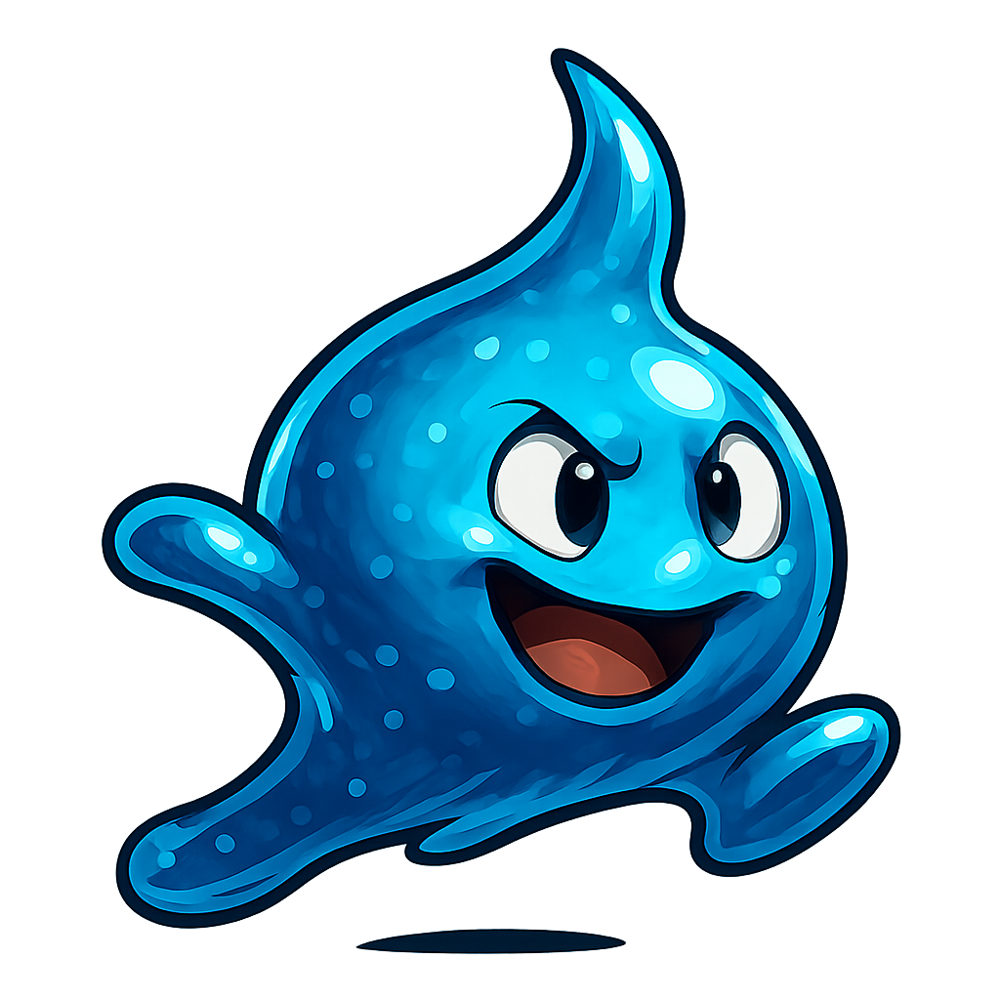
スライム
HP 14 ／ ATK 6
EXP 5 ／ G 5
出現Lv 1
A1(Lv1)・A2(Lv2)・B1(Lv1)・B2(Lv0)・上層坑道
[日本語] ファンタジーRPGのモンスター：しずく型の頂点を持つ王道の蒼いゼリー状スライム。表情豊かな大きな目と不敵な笑みで、元気よく跳びかかる戦闘ポーズ。ツヤのある半透明の空色ゼリー、内部に浮かぶ小さな気泡、濡れたような鋭いハイライトの豊かな質感対比。斜め（3/4）アングル、動きのある非対称シルエット。作り込まれた2Dファンタジーゲーム用スプライトアート、劇的なリムライト（輪郭光）、深い陰影、くっきりした暗い外枠線、中央配置の全身像、透過背景に単体切り抜き、文字なし、地面の影なし。
[EN] A fantasy RPG monster: a classic azure-blue gelatinous slime creature with a teardrop crest, bouncing forward in a spirited combat leap with big expressive eyes and a cheeky grin. Rich tactile material contrast between glossy semi-transparent sky-blue jelly, tiny suspended air bubbles, and bright wet specular highlights. Three-quarter angle, dynamic asymmetrical silhouette. High-craft 2D fantasy game sprite art, dramatic rim lighting, deep shading, crisp clean dark outline, centered full body, isolated on transparent background, no text, no ground shadow.
新4層Prompt (C: GPT Image 1)
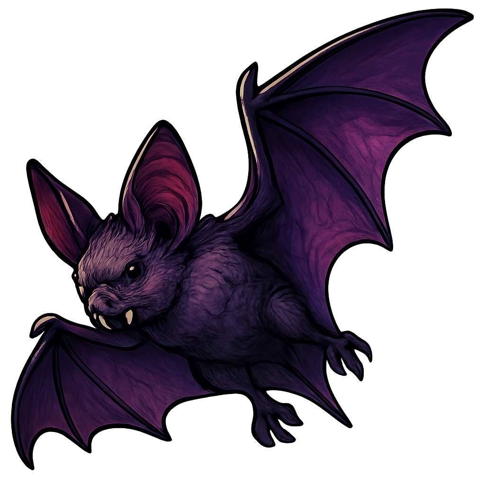
コウモリ
HP 10 ／ ATK 7
EXP 8 ／ G 7
出現Lv 1
A1(Lv1)・A2(Lv2)・B1(Lv1)・B2(Lv0)・C1(Lv2)・C2(Lv2)・上層坑道
[日本語] ファンタジーRPGのモンスター：紫の革質な翼を大きく広げて空中で急旋回する夜行性の洞窟コウモリ。警戒した大きな耳と2本の鋭い小牙をむいている。柔らかな暗紫色の毛並み、薄く張った翼膜、光る黒い爪の豊かな質感対比。斜め（3/4）アングル、動きのある非対称シルエット。作り込まれた2Dファンタジーゲーム用スプライトアート、劇的なリムライト（輪郭光）、深い陰影、くっきりした暗い外枠線、中央配置の全身像、透過背景に単体切り抜き、文字なし、地面の影なし。
[EN] A fantasy RPG monster: a nocturnal cave bat creature banking sharply in mid-air with violet-purple leathery wings spread wide, big alert ears, and two sharp little fangs bared. Rich tactile material contrast between soft dusky-purple fur, thin stretched wing membranes, and gleaming dark claws. Three-quarter angle, dynamic asymmetrical silhouette. High-craft 2D fantasy game sprite art, dramatic rim lighting, deep shading, crisp clean dark outline, centered full body, isolated on transparent background, no text, no ground shadow.
新4層Prompt (C: GPT Image 1)
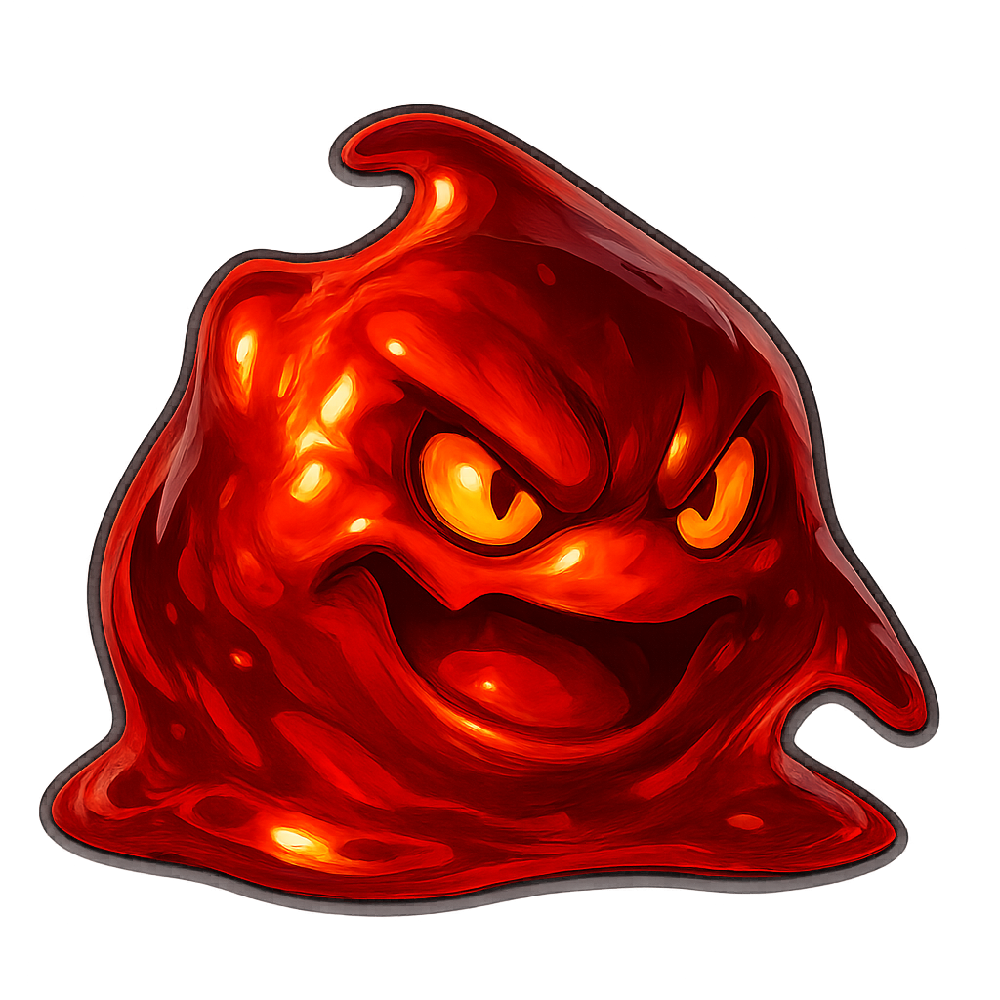
あかゼリー
HP 15 ／ ATK 6
EXP 6 ／ G 8
出現Lv 1
A1(Lv1)・B1(Lv1)
[日本語] ファンタジーRPGのモンスター：鮮やかな紅橙色のあかゼリー怪獣。威嚇するように弾み、熱気を帯びたいたずらっぽい目で睨んでいる。内部が温かく発光するルビー色の半透明ゼラチン、シロップのような表面の波紋、強いツヤの豊かな質感対比。斜め（3/4）アングル、動きのある非対称シルエット。作り込まれた2Dファンタジーゲーム用スプライトアート、劇的なリムライト（輪郭光）、深い陰影、くっきりした暗い外枠線、中央配置の全身像、透過背景に単体切り抜き、文字なし、地面の影なし。
[EN] A fantasy RPG monster: a vibrant crimson-orange jelly slime monster swelling in an aggressive bounce, glaring with fiery mischievous eyes. Rich tactile material contrast between translucent ruby-red gelatin with warm internal glow, syrupy surface ripples, and glossy highlights. Three-quarter angle, dynamic asymmetrical silhouette. High-craft 2D fantasy game sprite art, dramatic rim lighting, deep shading, crisp clean dark outline, centered full body, isolated on transparent background, no text, no ground shadow.
新4層Prompt (C: GPT Image 1)
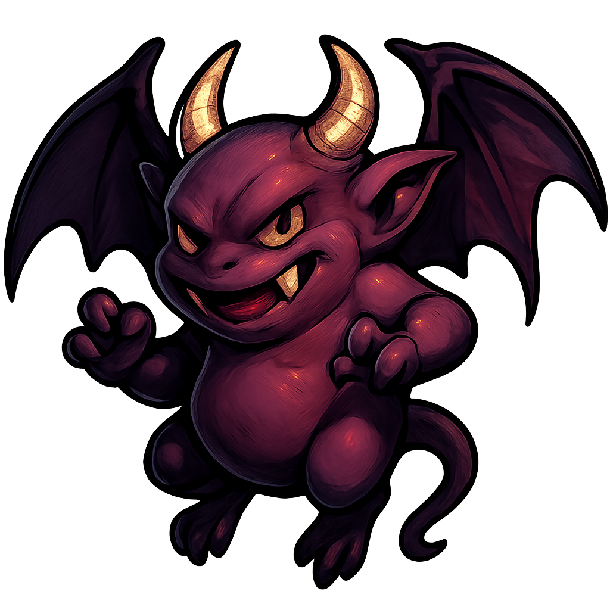
ツノコウモリ
HP 12 ／ ATK 8
EXP 9 ／ G 11
出現Lv 2
B3(Lv4)
[日本語] ファンタジーRPGのモンスター：湾曲した2本の小さな角と丸みのある紫の体、コウモリの翼を持つツノコウモリ。牙をのぞかせた不敵な笑みで宙に浮いている。滑らかなプラム色の肌、革質の暗い翼膜、磨かれた象牙色の角の豊かな質感対比。斜め（3/4）アングル、動きのある非対称シルエット。作り込まれた2Dファンタジーゲーム用スプライトアート、劇的なリムライト（輪郭光）、深い陰影、くっきりした暗い外枠線、中央配置の全身像、透過背景に単体切り抜き、文字なし、地面の影なし。
[EN] A fantasy RPG monster: a mischievous winged imp-bat creature with two curved little devil horns, plump purple body, and bat wings, hovering in a playful yet menacing pose with a fang-toothed smirk. Rich tactile material contrast between smooth plum-colored skin, leathery dark wing webbing, and polished ivory horns. Three-quarter angle, dynamic asymmetrical silhouette. High-craft 2D fantasy game sprite art, dramatic rim lighting, deep shading, crisp clean dark outline, centered full body, isolated on transparent background, no text, no ground shadow.
新4層Prompt (C: GPT Image 1)
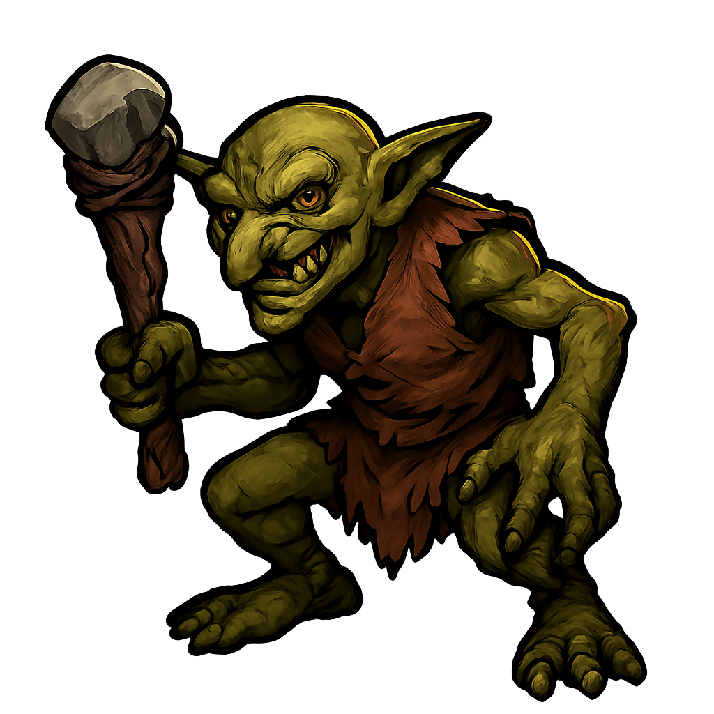
ゴブリン
HP 18 ／ ATK 8
EXP 11 ／ G 10
出現Lv 2
A1(Lv1)・A2(Lv2)・B1(Lv1)・B2(Lv0)・B3(Lv4)・C1(Lv2)・C2(Lv2)・C3(Lv3)・上層坑道
[日本語] ファンタジーRPGのモンスター：ボロボロの革ベストを着て待ち伏せ姿勢をとる緑肌のゴブリン。石を縛り付けた粗末な木製棍棒を握り、邪悪な笑みを浮かべている。ざらついたオリーブ色の肌、縫い目のある古革、節のある木材の豊かな質感対比。斜め（3/4）アングル、動きのある非対称シルエット。作り込まれた2Dファンタジーゲーム用スプライトアート、劇的なリムライト（輪郭光）、深い陰影、くっきりした暗い外枠線、中央配置の全身像、透過背景に単体切り抜き、文字なし、地面の影なし。
[EN] A fantasy RPG monster: a scrappy green-skinned goblin raider crouching in an ambush stance, clutching a crude stone-bound wooden club and wearing a tattered leather vest with a wicked grin. Rich tactile material contrast between rough olive skin, stitched worn hide, and knotted timber. Three-quarter angle, dynamic asymmetrical silhouette. High-craft 2D fantasy game sprite art, dramatic rim lighting, deep shading, crisp clean dark outline, centered full body, isolated on transparent background, no text, no ground shadow.
新4層Prompt (C: GPT Image 1)
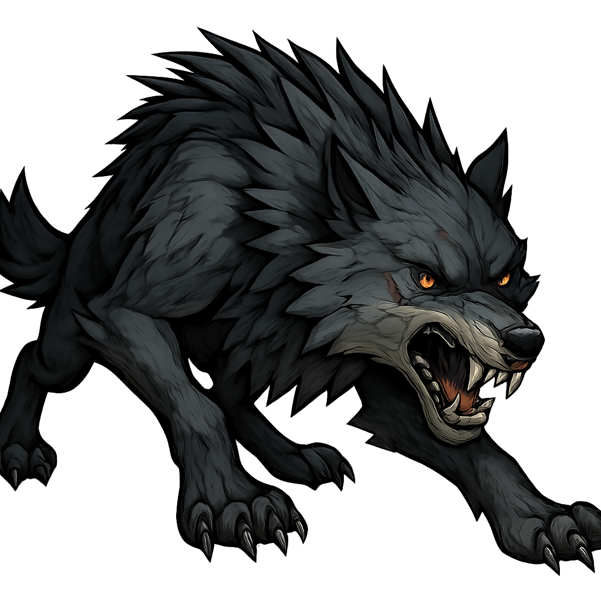
オオカミ
HP 14 ／ ATK 7
EXP 9 ／ G 8
出現Lv 2
A2(Lv2)・B1(Lv1)・B3(Lv4)・C1(Lv2)・C2(Lv2)・C3(Lv3)・上層坑道
[日本語] ファンタジーRPGのモンスター：背中の毛を逆立てて低く飛びかかる野生のオオカミ。白い牙をむき出しにして唸り、鋭い琥珀色の目を光らせている。重なった粗い灰色の毛並み、鼻先の古傷、鋭い爪の豊かな質感対比。斜め（3/4）アングル、動きのある非対称シルエット。作り込まれた2Dファンタジーゲーム用スプライトアート、劇的なリムライト（輪郭光）、深い陰影、くっきりした暗い外枠線、中央配置の全身像、透過背景に単体切り抜き、文字なし、地面の影なし。
[EN] A fantasy RPG monster: a wild timber wolf monster lunging low with hackles raised, snarling jaws showing white fangs, and fierce amber eyes. Rich tactile material contrast between coarse layered slate-grey fur, dark scars on the muzzle, and sharp claws. Three-quarter angle, dynamic asymmetrical silhouette. High-craft 2D fantasy game sprite art, dramatic rim lighting, deep shading, crisp clean dark outline, centered full body, isolated on transparent background, no text, no ground shadow.
新4層Prompt (C: GPT Image 1)
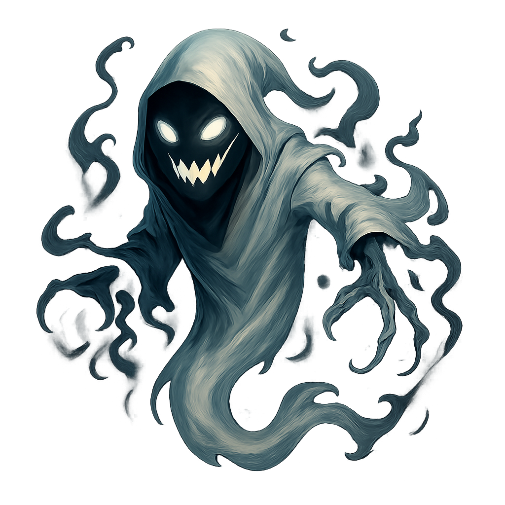
ゴースト
HP 20 ／ ATK 10
EXP 15 ／ G 13
出現Lv 3
A2(Lv2)・B3(Lv4)・C1(Lv2)・C2(Lv2)・C3(Lv3)・上層坑道・下層坑道
[日本語] ファンタジーRPGのモンスター：白い霊布のような尾をなびかせ、霧の手を伸ばす不気味なゴースト。虚ろに光る目と不気味な笑みを浮かべている。半透明に発光するエクトプラズム、たなびく霊気の霧、暗い内部の虚空の豊かな質感対比。斜め（3/4）アングル、動きのある非対称シルエット。作り込まれた2Dファンタジーゲーム用スプライトアート、劇的なリムライト（輪郭光）、深い陰影、くっきりした暗い外枠線、中央配置の全身像、透過背景に単体切り抜き、文字なし、地面の影なし。
[EN] A fantasy RPG monster: an eerie wandering phantom spirit with a billowing spectral white shroud tail, curling misty hands, and glowing hollow eyes with a spooky grin. Rich tactile material contrast between translucent luminous ectoplasm, wispy trailing vapor, and shadowy inner voids. Three-quarter angle, dynamic asymmetrical silhouette. High-craft 2D fantasy game sprite art, dramatic rim lighting, deep shading, crisp clean dark outline, centered full body, isolated on transparent background, no text, no ground shadow.
新4層Prompt (C: GPT Image 1)
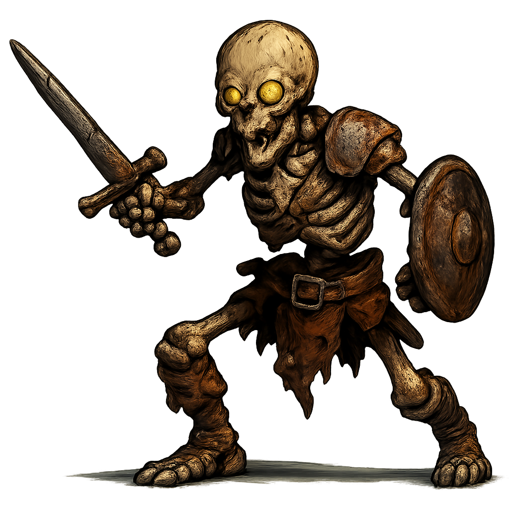
スケルトン
HP 18 ／ ATK 9
EXP 13 ／ G 11
出現Lv 3
A3(Lv5)・B3(Lv4)・C1(Lv2)・C2(Lv2)・下層坑道
[日本語] ファンタジーRPGのモンスター：古びた革帯を巻き、刃こぼれした鉄の短剣と小盾を構えて突き出すスケルトン剣士。眼窩に怪しい黄色い光が宿っている。風化した象牙色の骨、腐食した鉄、ひび割れた革の豊かな質感対比。斜め（3/4）アングル、動きのある非対称シルエット。作り込まれた2Dファンタジーゲーム用スプライトアート、劇的なリムライト（輪郭光）、深い陰影、くっきりした暗い外枠線、中央配置の全身像、透過背景に単体切り抜き、文字なし、地面の影なし。
[EN] A fantasy RPG monster: a reanimated skeleton swordsman in rusted scrap-leather straps, lunging in a fencing stance with a notched iron shortsword and a buckler shield, eerie yellow light in its eye sockets. Rich tactile material contrast between weathered ivory bone, corroded iron, and cracked leather. Three-quarter angle, dynamic asymmetrical silhouette. High-craft 2D fantasy game sprite art, dramatic rim lighting, deep shading, crisp clean dark outline, centered full body, isolated on transparent background, no text, no ground shadow.
新4層Prompt (C: GPT Image 1)
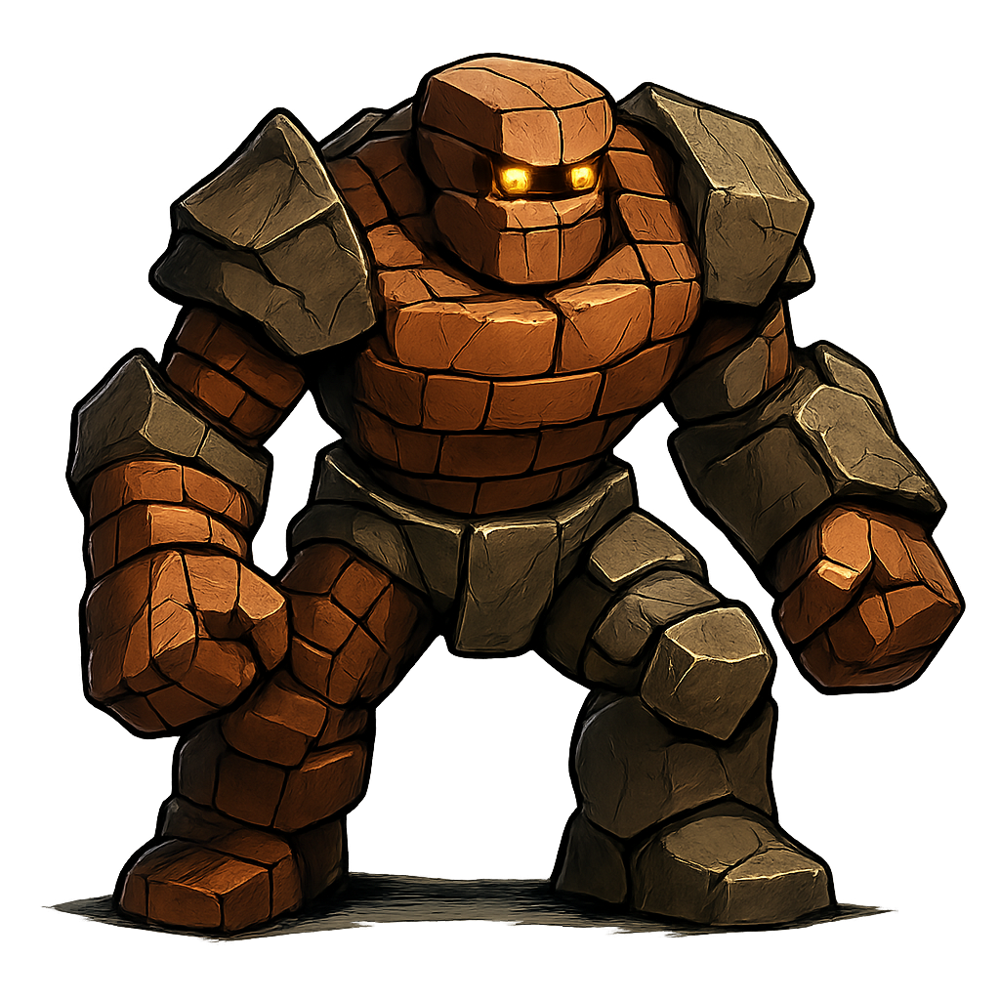
ゴーレム
HP 30 ／ ATK 12
EXP 22 ／ G 18
出現Lv 4
A3(Lv5)・C3(Lv3)・下層坑道
[日本語] ファンタジーRPGのモンスター：風化した赤土レンガと古代石で築かれた巨大なゴーレム。目を光らせ、巨大な両拳を構えて不動の姿勢をとっている。ひび割れた焼成粘土ブロック、目地のモルタル、重厚な石板の豊かな質感対比。斜め（3/4）アングル、動きのある非対称シルエット。作り込まれた2Dファンタジーゲーム用スプライトアート、劇的なリムライト（輪郭光）、深い陰影、くっきりした暗い外枠線、中央配置の全身像、透過背景に単体切り抜き、文字なし、地面の影なし。
[EN] A fantasy RPG monster: a massive earthen brick-and-clay golem guardian built from weathered terracotta blocks and ancient stone, bracing its huge fists in an immovable stance with glowing eyes. Rich tactile material contrast between cracked kilned clay bricks, Mortar seams, and sturdy stone plates. Three-quarter angle, dynamic asymmetrical silhouette. High-craft 2D fantasy game sprite art, dramatic rim lighting, deep shading, crisp clean dark outline, centered full body, isolated on transparent background, no text, no ground shadow.
新4層Prompt (C: GPT Image 1)
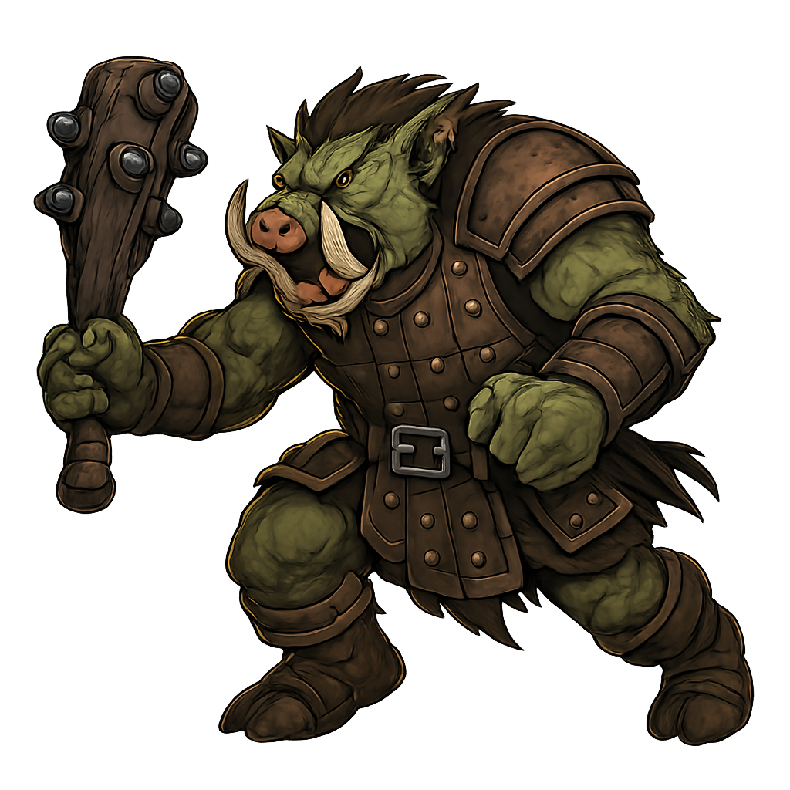
オーク
HP 24 ／ ATK 11
EXP 18 ／ G 14
出現Lv 4
B3(Lv4)・C3(Lv3)・下層坑道
[日本語] ファンタジーRPGのモンスター：反り返った牙と鋲打ち革鎧をまとった猪顔の屈強なオーク戦士。鉄輪付きの太い棍棒を振り回して獰猛に突進している。分厚い苔緑色の皮膚、鋲付きの硬革、象牙のキバの豊かな質感対比。斜め（3/4）アングル、動きのある非対称シルエット。作り込まれた2Dファンタジーゲーム用スプライトアート、劇的なリムライト（輪郭光）、深い陰影、くっきりした暗い外枠線、中央配置の全身像、透過背景に単体切り抜き、文字なし、地面の影なし。
[EN] A fantasy RPG monster: a burly boar-faced orc warrior with upturned tusks and heavy leather brigandine armor, swinging a thick iron-ringed war club in a ferocious charge. Rich tactile material contrast between tough moss-green hide, studded boiled leather, and ivory tusks. Three-quarter angle, dynamic asymmetrical silhouette. High-craft 2D fantasy game sprite art, dramatic rim lighting, deep shading, crisp clean dark outline, centered full body, isolated on transparent background, no text, no ground shadow.
新4層Prompt (C: GPT Image 1)
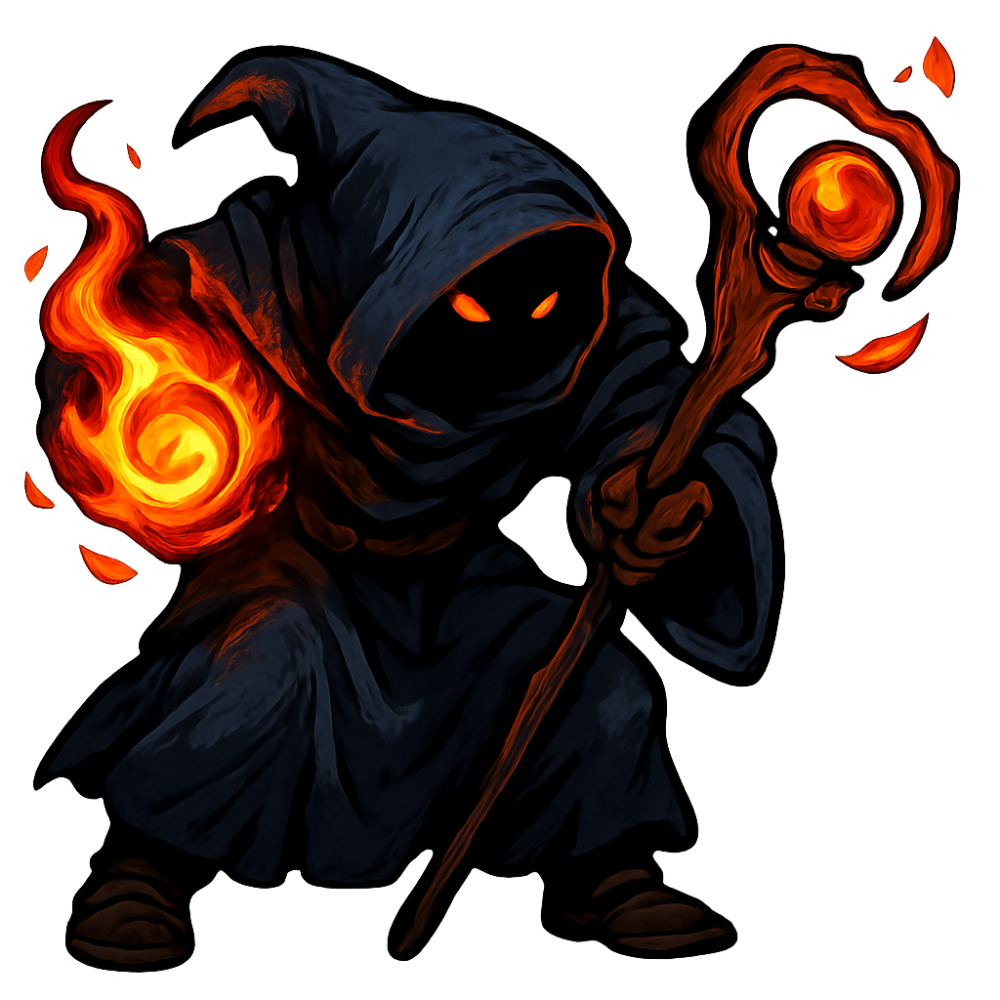
みならい魔道士
HP 16 ／ ATK 13
EXP 24 ／ G 20
出現Lv 5
A3(Lv5)・下層坑道
[日本語] ファンタジーRPGのモンスター：深い藍色のフード付き外套をまとったみならい魔道士。琥珀の宝玉が付いた木の杖から渦巻く火球を放とうと身を乗り出している。織り目のある羊毛の外套、磨かれた木目、輝く魔法の炎の豊かな質感対比。斜め（3/4）アングル、動きのある非対称シルエット。作り込まれた2Dファンタジーゲーム用スプライトアート、劇的なリムライト（輪郭光）、深い陰影、くっきりした暗い外枠線、中央配置の全身像、透過背景に単体切り抜き、文字なし、地面の影なし。
[EN] A fantasy RPG monster: a rogue apprentice dark mage in a deep indigo hooded cloak, leaning forward while casting a swirling fireball from a gnarled wooden staff topped with an amber orb. Rich tactile material contrast between woven wool cloak fabric, polished wood grain, and glowing spell fire. Three-quarter angle, dynamic asymmetrical silhouette. High-craft 2D fantasy game sprite art, dramatic rim lighting, deep shading, crisp clean dark outline, centered full body, isolated on transparent background, no text, no ground shadow.
新4層Prompt (C: GPT Image 1)
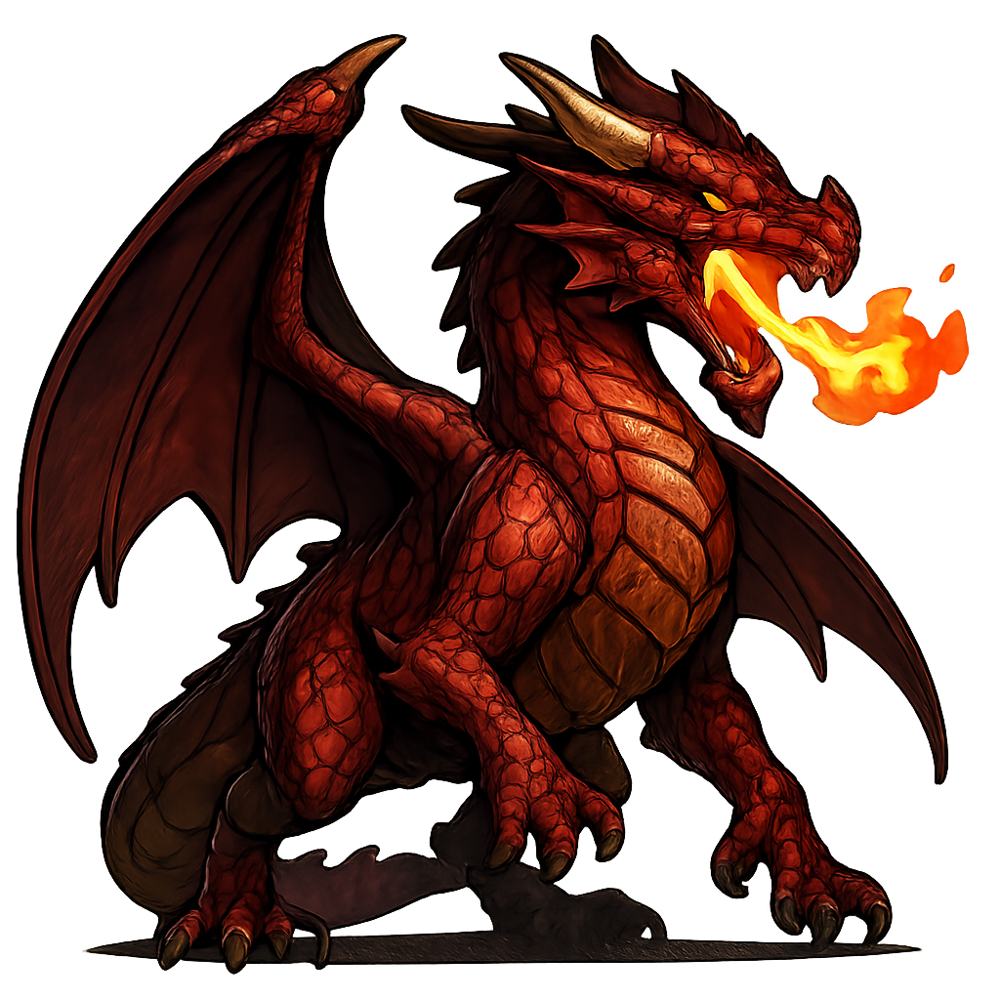
ドラゴン
HP 45 ／ ATK 15
EXP 40 ／ G 35
出現Lv 7
A3(Lv5)
[日本語] ファンタジーRPGのモンスター：革質の翼を大きく広げ、顎の奥にオレンジ色の炎を宿して身を反らす王道の赤いドラゴン。金色の爬虫類の目で前方を睨みつけている。重なり合うルビー色の硬鱗、隆起した金色の腹板、象牙色の角の豊かな質感対比。斜め（3/4）アングル、動きのある非対称シルエット。作り込まれた2Dファンタジーゲーム用スプライトアート、劇的なリムライト（輪郭光）、深い陰影、くっきりした暗い外枠線、中央配置の全身像、透過背景に単体切り抜き、文字なし、地面の影なし。
[EN] A fantasy RPG monster: a classic fierce crimson wyrm dragon rearing back with leathery wings unfurled and orange fire glowing in its jaws, golden reptilian eyes locked forward. Rich tactile material contrast between overlapping ruby-red armored scales, ridged golden belly plates, and ivory horns. Three-quarter angle, dynamic asymmetrical silhouette. High-craft 2D fantasy game sprite art, dramatic rim lighting, deep shading, crisp clean dark outline, centered full body, isolated on transparent background, no text, no ground shadow.
新4層Prompt (C: GPT Image 1)
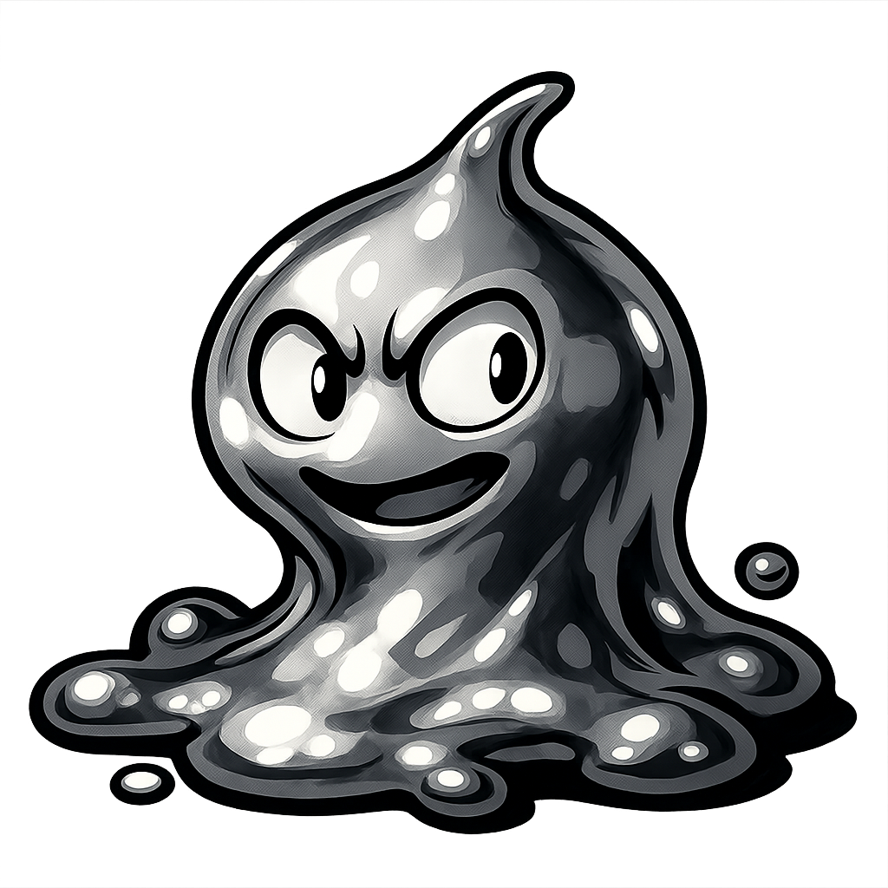
すいぎんスライム
HP 6 ／ ATK 5
EXP 150 ／ G 5
出現Lv 4
—
臆病（逃走しやすい）／硬い（攻撃ほぼ1）
[日本語] ファンタジーRPGのモンスター：鏡のようなクロム表面を持つ滑らかな液体水銀の金属スライム。今にも逃げ出しそうにいたずらっぽい大きな目で横を見ている。重い溶融銀のしずく、鋭い金属の鏡面反射、滑らかな流体曲線の豊かな質感対比。斜め（3/4）アングル、動きのある非対称シルエット。作り込まれた2Dファンタジーゲーム用スプライトアート、劇的なリムライト（輪郭光）、深い陰影、くっきりした暗い外枠線、中央配置の全身像、透過背景に単体切り抜き、文字なし、地面の影なし。
[EN] A fantasy RPG monster: a sleek liquid-mercury metallic slime creature with a mirror-like chrome surface, glancing sideways with mischievous wide eyes as if ready to dash away at any second. Rich tactile material contrast between heavy molten silver droplets, sharp specular metallic reflections, and smooth fluid curves. Three-quarter angle, dynamic asymmetrical silhouette. High-craft 2D fantasy game sprite art, dramatic rim lighting, deep shading, crisp clean dark outline, centered full body, isolated on transparent background, no text, no ground shadow.
新4層Prompt (C: GPT Image 1)
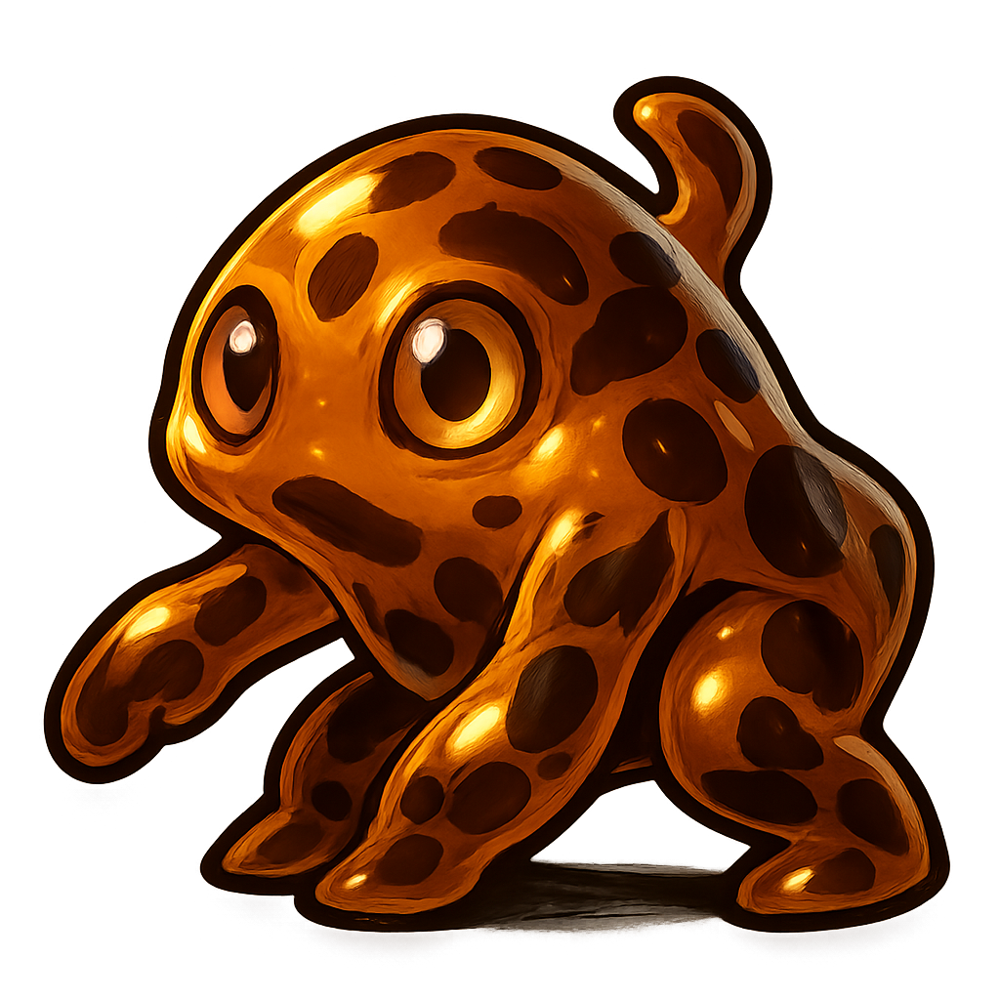
まだらゼリー
HP 18 ／ ATK 7
EXP 9 ／ G 8
出現Lv 2
—
[日本語] ファンタジーRPGのモンスター：琥珀色とココア色の斑模様を持つまだらゼリー怪獣。好奇心旺盛な大きな琥珀色の目で、元気よく跳ねるような戦闘姿勢をとっている。半透明のハチミツ色のゼラチン、内部に浮かぶ濃い茶色の斑点、ツヤのある表面ハイライトの豊かな質感対比。斜め（3/4）アングル、動きのある非対称シルエット。作り込まれた2Dファンタジーゲーム用スプライトアート、劇的なリムライト（輪郭光）、深い陰影、くっきりした暗い外枠線、中央配置の全身像、透過背景に単体切り抜き、文字なし、地面の影なし。
[EN] A fantasy RPG monster: a mottled amber-and-cocoa spotted jelly slime creature bouncing in an energetic combat crouch, with big curious amber eyes. Rich tactile material contrast between translucent honey-colored gelatin, dark chocolate-brown organic spots floating inside the gel, and glossy surface highlights. Three-quarter angle, dynamic asymmetrical silhouette. High-craft 2D fantasy game sprite art, dramatic rim lighting, deep shading, crisp clean dark outline, centered full body, isolated on transparent background, no text, no ground shadow.
新4層Prompt (C: GPT Image 1)
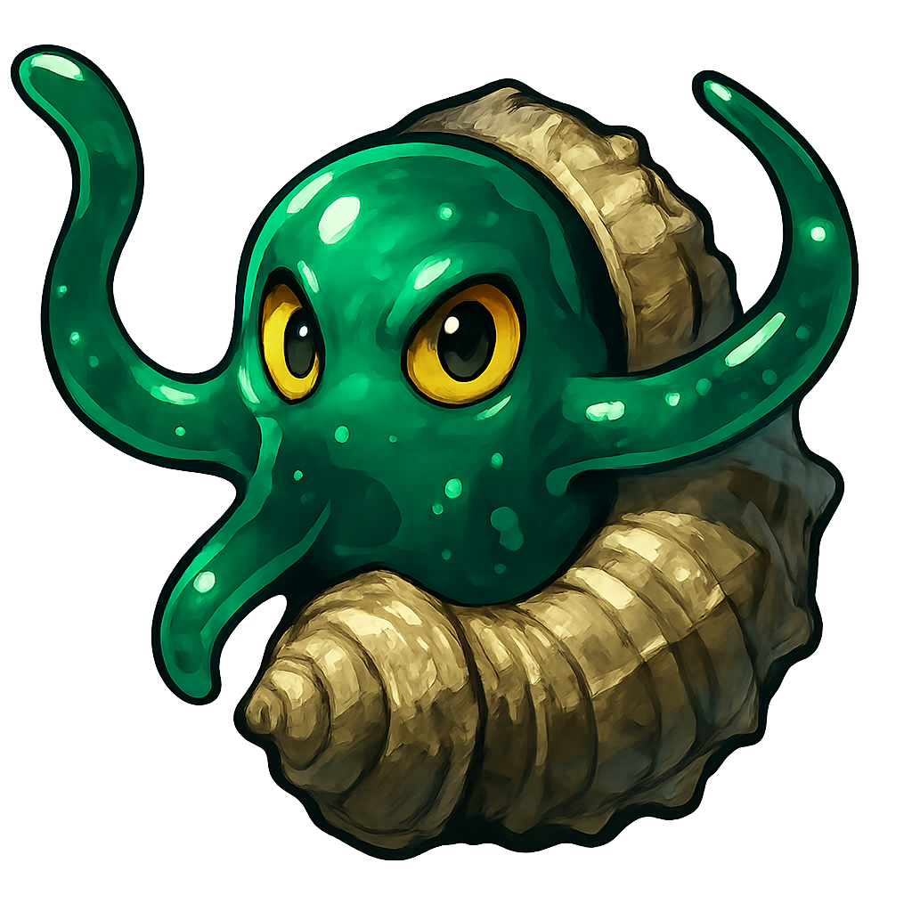
やどかりスライム
HP 26 ／ ATK 5
EXP 12 ／ G 10
出現Lv 3
—
[日本語] ファンタジーRPGのモンスター：風化した渦巻き状の巻貝の中に収まった半透明のエメラルドグリーンのスライム。表情豊かな大きな金色の目でこちらを覗き込み、2本のゼリー状の触手を揺らして愛嬌がありつつも臨戦態勢をとっている。内部の気泡と光の屈折がある半透明ゼリー体と、古びた貝殻のザラついた石灰質の隆起との豊かな質感対比。斜め（3/4）アングル、動きのある非対称シルエット。作り込まれた2Dファンタジーゲーム用スプライトアート、劇的なリムライト（輪郭光）、深い陰影、くっきりした暗い外枠線、中央配置の全身像、透過背景に単体切り抜き、文字なし、地面の影なし。
[EN] A fantasy RPG monster: a translucent emerald-green slime creature nestled inside a weathered spiral seashell, peeking out with large expressive golden eyes and waving two gelatinous tentacles in a playful yet ready battle stance. Rich tactile material contrast between the glossy semi-transparent jelly body with subtle internal bubbles and light refraction and the rough calcified ridges of the ancient shell. Three-quarter angle, dynamic asymmetrical silhouette. High-craft 2D fantasy game sprite art, dramatic rim lighting, deep shading, crisp clean dark outline, centered full body, isolated on transparent background, no text, no ground shadow.
新4層Prompt (C: GPT Image 1)
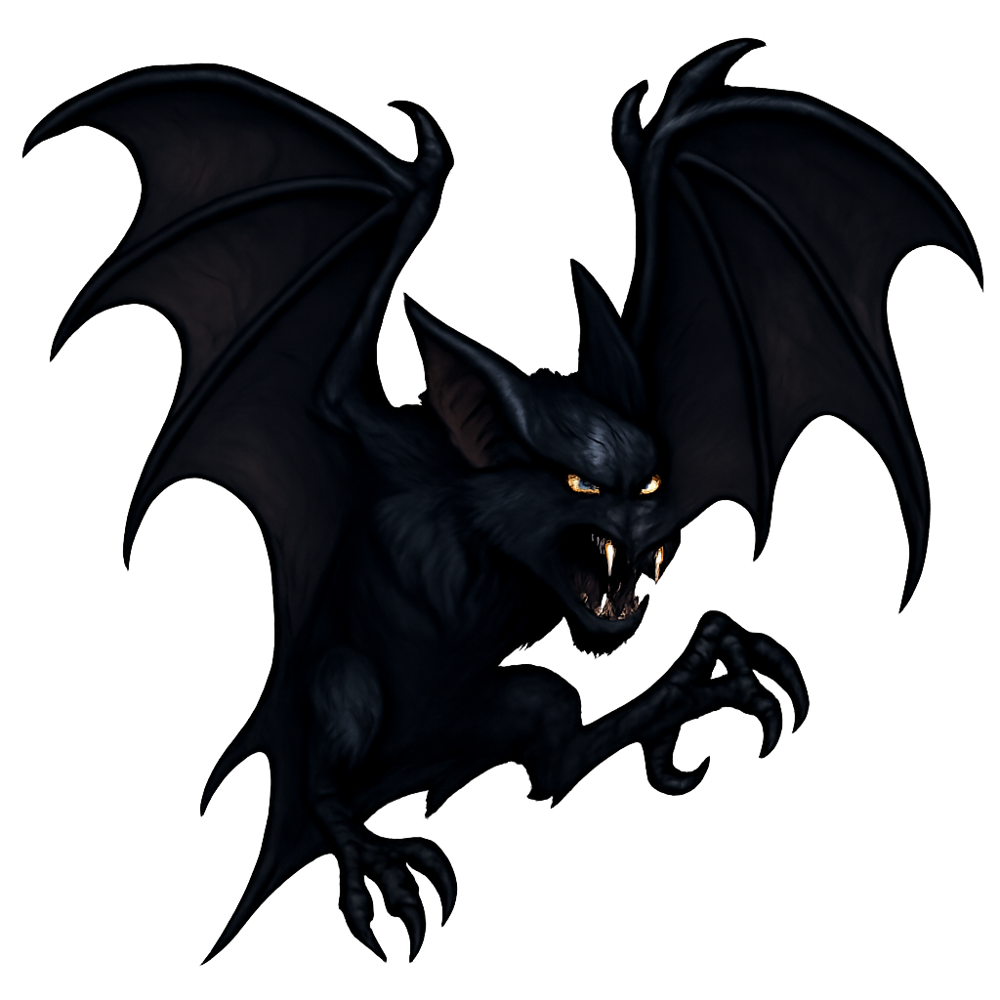
かげコウモリ
HP 16 ／ ATK 10
EXP 14 ／ G 10
出現Lv 3
—
[日本語] ファンタジーRPGのモンスター：幅広い革質の黒翼を広げ、鋭い牙をむいて急降下する大型の影コウモリ。光る琥珀色の目で獲物を捉えている。胴体のビロードのような黒い毛並み、血管が透ける翼膜、鉤爪の豊かな質感対比。斜め（3/4）アングル、動きのある非対称シルエット。作り込まれた2Dファンタジーゲーム用スプライトアート、劇的なリムライト（輪郭光）、深い陰影、くっきりした暗い外枠線、中央配置の全身像、透過背景に単体切り抜き、文字なし、地面の影なし。
[EN] A fantasy RPG monster: a large dusk-black shadow bat beast mid-swoop with broad leathery charcoal wings flared and sharp fangs bared, glowing amber eyes locked on its prey. Rich tactile material contrast between velvety dark fur on the torso, stretched translucent wing membranes with visible veins, and hooked claws. Three-quarter angle, dynamic asymmetrical silhouette. High-craft 2D fantasy game sprite art, dramatic rim lighting, deep shading, crisp clean dark outline, centered full body, isolated on transparent background, no text, no ground shadow.
新4層Prompt (C: GPT Image 1)
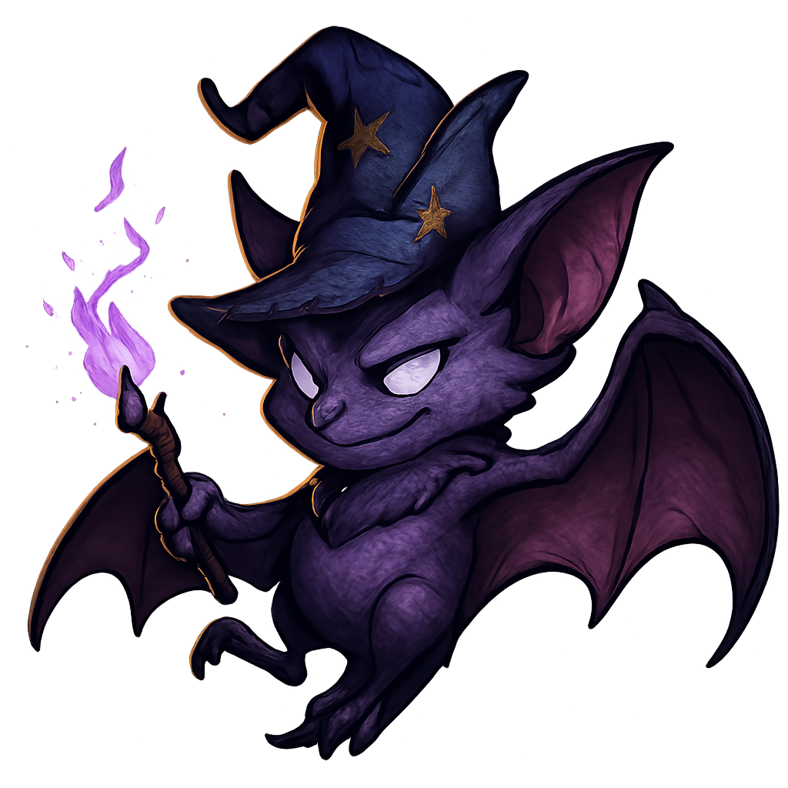
まどうコウモリ
HP 14 ／ ATK 12
EXP 18 ／ G 16
出現Lv 4
—
[日本語] ファンタジーRPGのモンスター：星模様の曲がった魔法使い帽子をかぶり、紫の魔力が弾ける小さな木の杖を握ったツノ付きの魔道コウモリ。得意げな詠唱ポーズで滞空している。プラム色の柔らかい翼、帽子の縫い目がある布地、輝く魔法結晶の豊かな質感対比。斜め（3/4）アングル、動きのある非対称シルエット。作り込まれた2Dファンタジーゲーム用スプライトアート、劇的なリムライト（輪郭光）、深い陰影、くっきりした暗い外枠線、中央配置の全身像、透過背景に単体切り抜き、文字なし、地面の影なし。
[EN] A fantasy RPG monster: a horned purple arcane bat familiar wearing a crooked starry wizard hat and clutching a miniature gnarled wand sparking with violet mana, hovering in a smug spellcasting pose. Rich tactile material contrast between soft plum-colored wings, stitched fabric of the hat, and glowing crystal magic. Three-quarter angle, dynamic asymmetrical silhouette. High-craft 2D fantasy game sprite art, dramatic rim lighting, deep shading, crisp clean dark outline, centered full body, isolated on transparent background, no text, no ground shadow.
新4層Prompt (C: GPT Image 1)
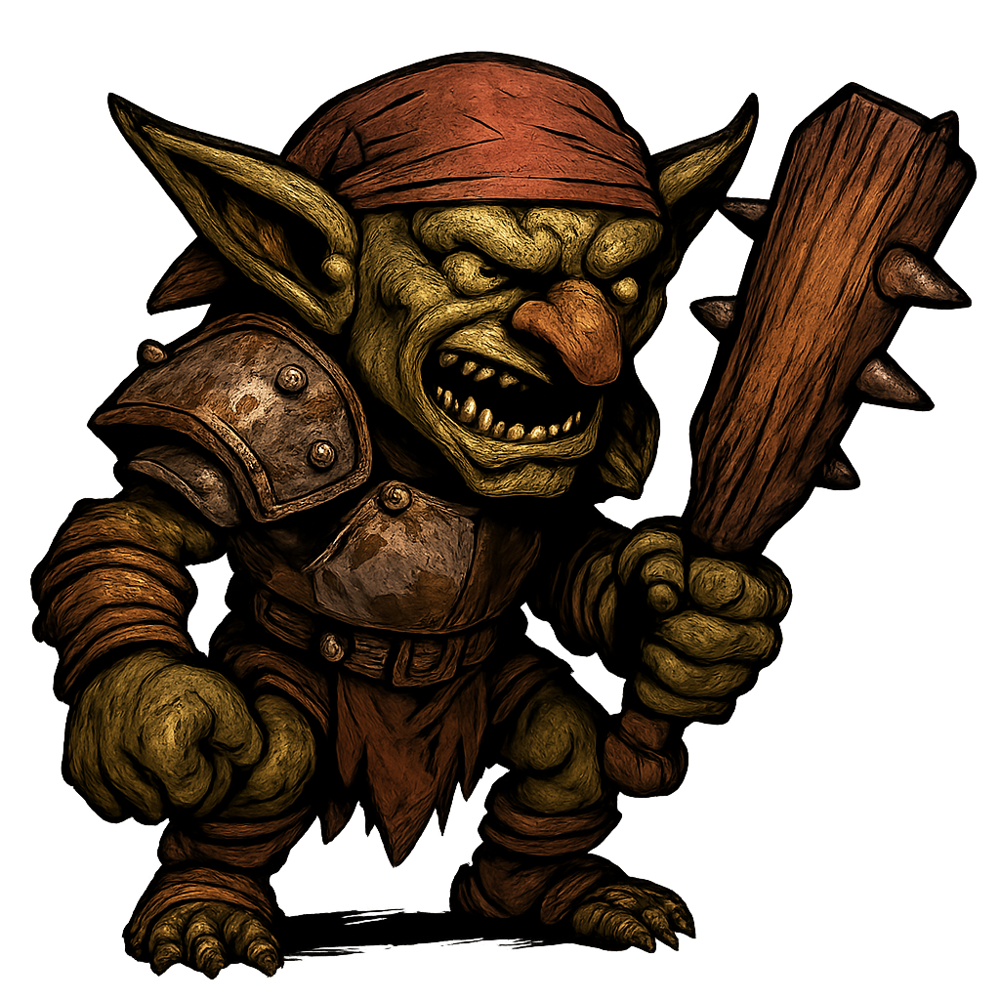
ゴブリンおやかた
HP 22 ／ ATK 10
EXP 16 ／ G 14
出現Lv 3
—
[日本語] ファンタジーRPGのモンスター：赤いバンダナと鉄くずの肩当てを着け、傷跡のある威張り散らしたゴブリン親方。獰猛な笑みを浮かべて重いトゲ付き木製棍棒を担いでいる。風化したオリーブ色の肌、錆びたリベット留めの鉄板、ささくれた堅木の豊かな質感対比。斜め（3/4）アングル、動きのある非対称シルエット。作り込まれた2Dファンタジーゲーム用スプライトアート、劇的なリムライト（輪郭光）、深い陰影、くっきりした暗い外枠線、中央配置の全身像、透過背景に単体切り抜き、文字なし、地面の影なし。
[EN] A fantasy RPG monster: a scarred, bossy goblin foreman wearing a rugged red bandana and scrap-iron shoulder pads, hefting a heavy spiked timber club with a fierce grin. Rich tactile material contrast between weathered olive-green skin, rusted riveted iron plates, and splintered hardwood. Three-quarter angle, dynamic asymmetrical silhouette. High-craft 2D fantasy game sprite art, dramatic rim lighting, deep shading, crisp clean dark outline, centered full body, isolated on transparent background, no text, no ground shadow.
新4層Prompt (C: GPT Image 1)
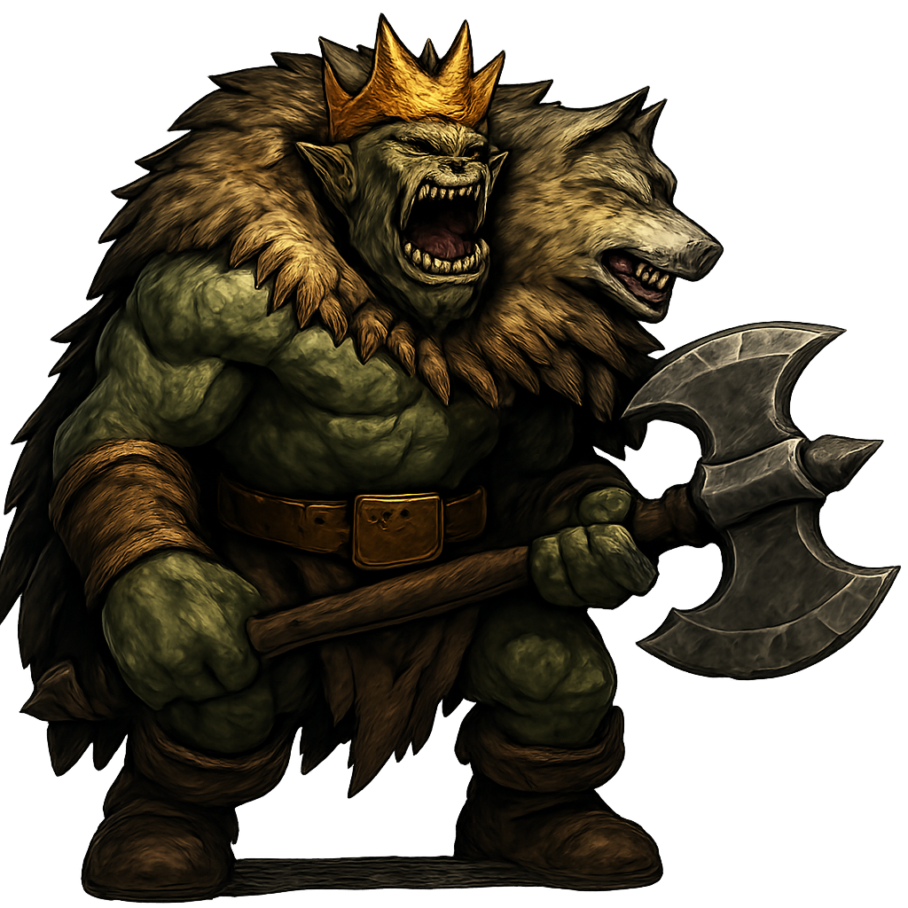
オークのおかしら
HP 40 ／ ATK 14
EXP 30 ／ G 25
出現Lv 6
—
[日本語] ファンタジーRPGのモンスター：ギザギザの金の冠と分厚い狼毛皮のマントをまとった筋骨隆々のオークのお頭。巨大な両刃の大斧を握りしめ、威圧的な姿勢で咆哮している。粗い深緑の皮膚、鍛造された黄金、毛足の長い毛皮、重厚な鋼の豊かな質感対比。斜め（3/4）アングル、動きのある非対称シルエット。作り込まれた2Dファンタジーゲーム用スプライトアート、劇的なリムライト（輪郭光）、深い陰影、くっきりした暗い外枠線、中央配置の全身像、透過背景に単体切り抜き、文字なし、地面の影なし。
[EN] A fantasy RPG monster: a massive, muscular orc chieftain wearing a jagged golden crown and a thick wolf-pelt mantle, roaring in a commanding stance while gripping a huge double-bladed greataxe. Rich tactile material contrast between coarse dark-green hide, hammered gold, shaggy fur, and heavy forged steel. Three-quarter angle, dynamic asymmetrical silhouette. High-craft 2D fantasy game sprite art, dramatic rim lighting, deep shading, crisp clean dark outline, centered full body, isolated on transparent background, no text, no ground shadow.
新4層Prompt (C: GPT Image 1)
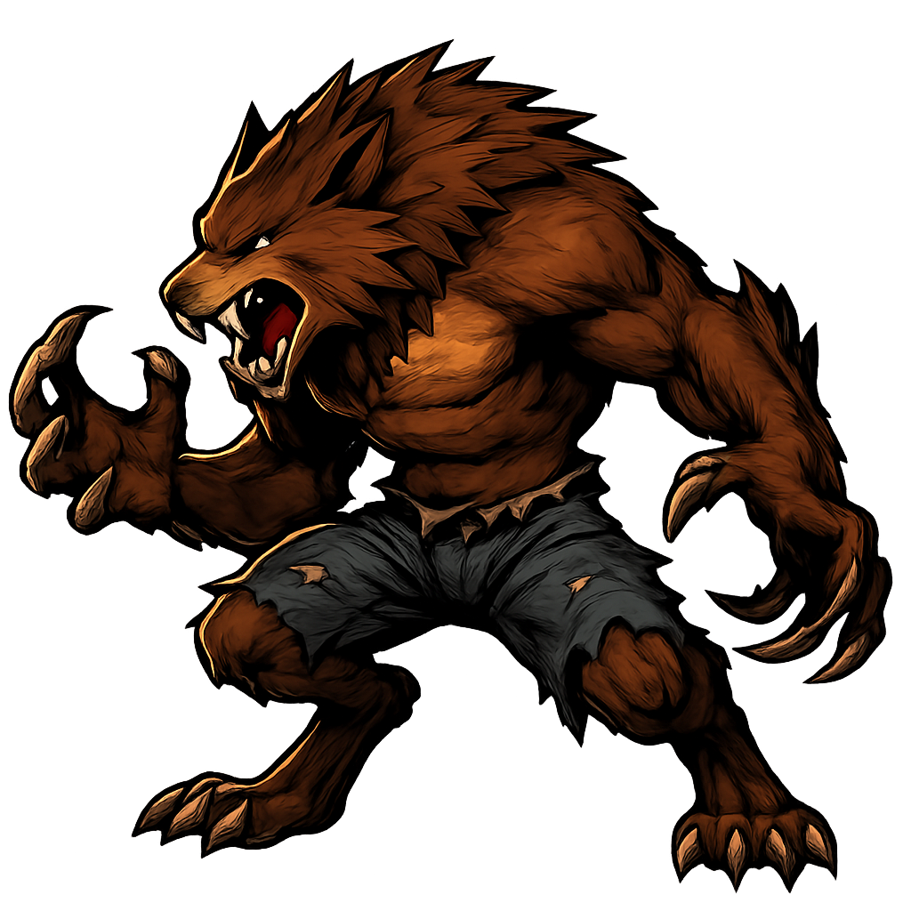
ワーウルフ
HP 30 ／ ATK 16
EXP 28 ／ G 20
出現Lv 5
—
[日本語] ファンタジーRPGのモンスター：筋骨隆々の茶色い毛並みと破れたズボンをまとい、鋭い鉤爪を広げて斬りかかる二足歩行のワーウルフ（獣人）。逆立つ厚い栗毛、むき出しの白い牙、引き裂かれた布地の豊かな質感対比。斜め（3/4）アングル、動きのある非対称シルエット。作り込まれた2Dファンタジーゲーム用スプライトアート、劇的なリムライト（輪郭光）、深い陰影、くっきりした暗い外枠線、中央配置の全身像、透過背景に単体切り抜き、文字なし、地面の影なし。
[EN] A fantasy RPG monster: a ferocious bipedal werewolf beastman with muscular brown fur, torn battle trousers, and razor-sharp claws extended in a savage slashing stance. Rich tactile material contrast between thick bristling chestnut fur, bared white fangs, and shredded cloth. Three-quarter angle, dynamic asymmetrical silhouette. High-craft 2D fantasy game sprite art, dramatic rim lighting, deep shading, crisp clean dark outline, centered full body, isolated on transparent background, no text, no ground shadow.
新4層Prompt (C: GPT Image 1)
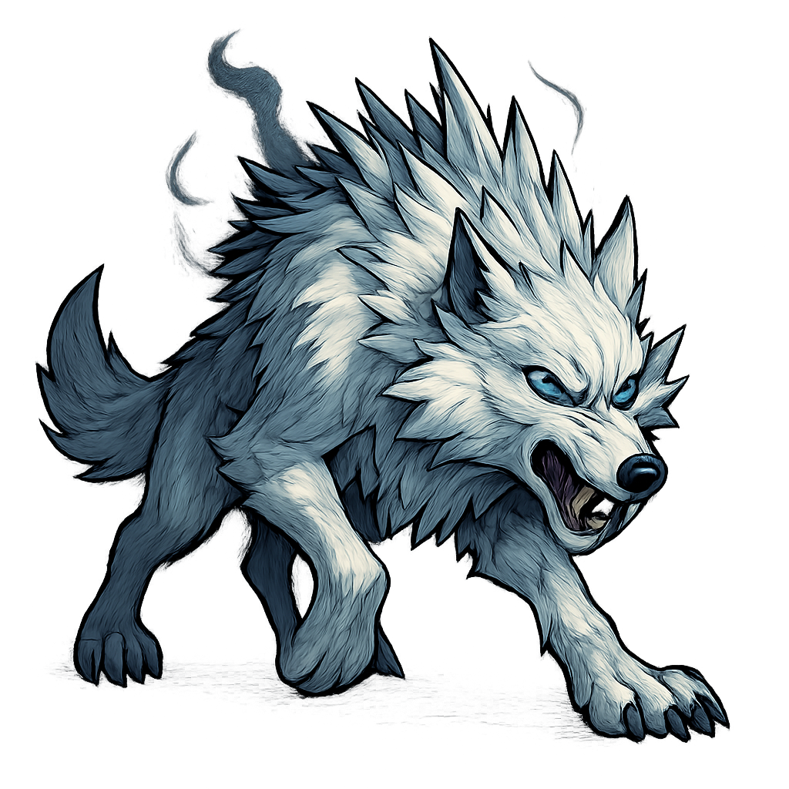
しろがねウルフ
HP 20 ／ ATK 9
EXP 14 ／ G 12
出現Lv 3
—
[日本語] ファンタジーRPGのモンスター：凍てつく銀白の毛並みを逆立て、牙をむいて忍び寄るしろがねウルフ。氷河のように鋭い青い目を光らせ、肩から冷気が立ち上っている。厚く重なった白い冬毛、背中の氷結晶のトゲ、黒く濡れた鼻先の豊かな質感対比。斜め（3/4）アングル、動きのある非対称シルエット。作り込まれた2Dファンタジーゲーム用スプライトアート、劇的なリムライト（輪郭光）、深い陰影、くっきりした暗い外枠線、中央配置の全身像、透過背景に単体切り抜き、文字なし、地面の影なし。
[EN] A fantasy RPG monster: a sleek silver-white frost wolf mid-prowl with bristling icy fur, bared fangs, and piercing glacial-blue eyes, wisps of cold frost rising from its shoulders. Rich tactile material contrast between thick layered white winter fur, crystalline ice spikes along its back, and dark wet nose leather. Three-quarter angle, dynamic asymmetrical silhouette. High-craft 2D fantasy game sprite art, dramatic rim lighting, deep shading, crisp clean dark outline, centered full body, isolated on transparent background, no text, no ground shadow.
新4層Prompt (C: GPT Image 1)
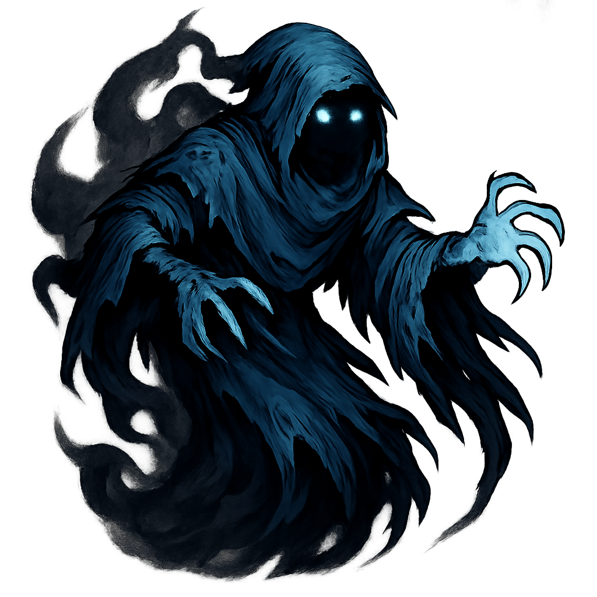
やみゴースト
HP 26 ／ ATK 12
EXP 20 ／ G 16
出現Lv 4
—
[日本語] ファンタジーRPGのモンスター：ボロボロの宵闇色の経帷子をまとい、亡霊の鉤爪を伸ばす不気味な黒霧のやみゴースト。渦巻く半透明の影エクトプラズム、ほつれた古い布、冷たい霊光の豊かな質感対比。斜め（3/4）アングル、動きのある非対称シルエット。作り込まれた2Dファンタジーゲーム用スプライトアート、劇的なリムライト（輪郭光）、深い陰影、くっきりした暗い外枠線、中央配置の全身像、透過背景に単体切り抜き、文字なし、地面の影なし。
[EN] A fantasy RPG monster: a sinister dark-mist phantom spirit draped in tattered twilight-blue burial shrouds, reaching forward with spectral claws and glowing pale eyes. Rich tactile material contrast between semi-transparent swirling shadow ectoplasm, frayed ancient cloth, and cold ghostly luminescence. Three-quarter angle, dynamic asymmetrical silhouette. High-craft 2D fantasy game sprite art, dramatic rim lighting, deep shading, crisp clean dark outline, centered full body, isolated on transparent background, no text, no ground shadow.
新4層Prompt (C: GPT Image 1)
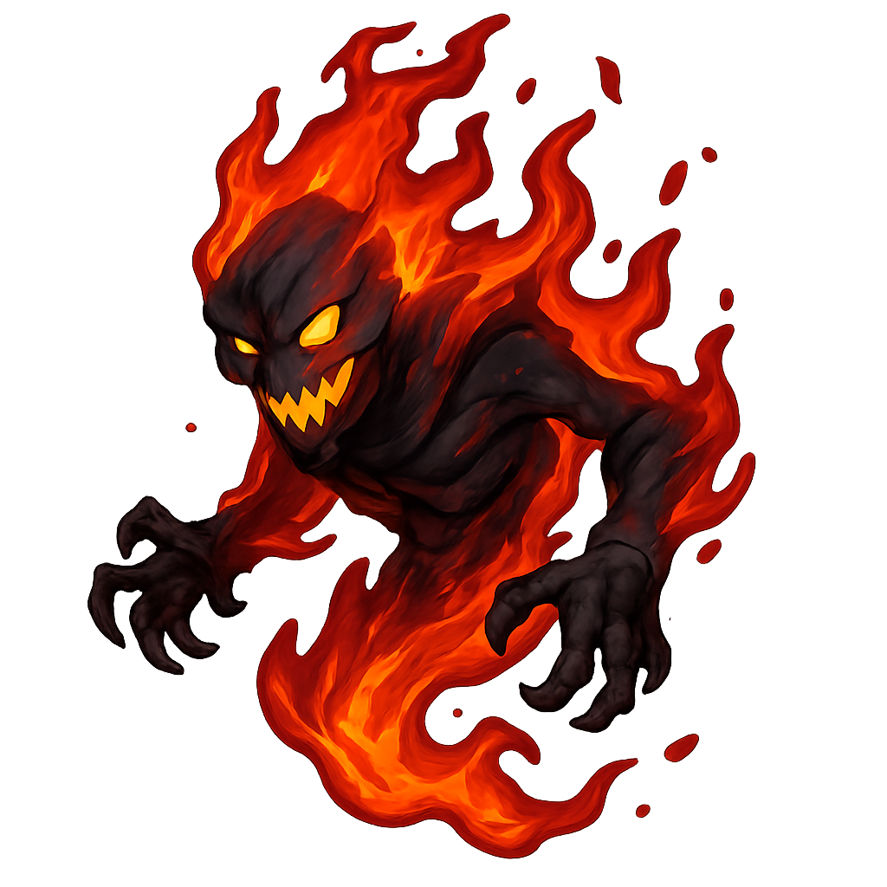
かえんゴースト
HP 32 ／ ATK 14
EXP 28 ／ G 22
出現Lv 6
—
[日本語] ファンタジーRPGのモンスター：真紅と橙色の霊炎をまとって浮かぶかえんゴースト。燃え盛る黄色い目と邪悪な笑みで威嚇している。半透明の高熱プラズマ炎、舞い上がる火の粉、黒煙の核の豊かな質感対比。斜め（3/4）アングル、動きのある非対称シルエット。作り込まれた2Dファンタジーゲーム用スプライトアート、劇的なリムライト（輪郭光）、深い陰影、くっきりした暗い外枠線、中央配置の全身像、透過背景に単体切り抜き、文字なし、地面の影なし。
[EN] A fantasy RPG monster: a fiery wraith phantom wreathed in roaring crimson-and-orange spectral flames, floating in a menacing posture with blazing yellow eyes and a wicked grin. Rich tactile material contrast between translucent superheated plasma fire, charred floating embers, and dark smoky core. Three-quarter angle, dynamic asymmetrical silhouette. High-craft 2D fantasy game sprite art, dramatic rim lighting, deep shading, crisp clean dark outline, centered full body, isolated on transparent background, no text, no ground shadow.
新4層Prompt (C: GPT Image 1)
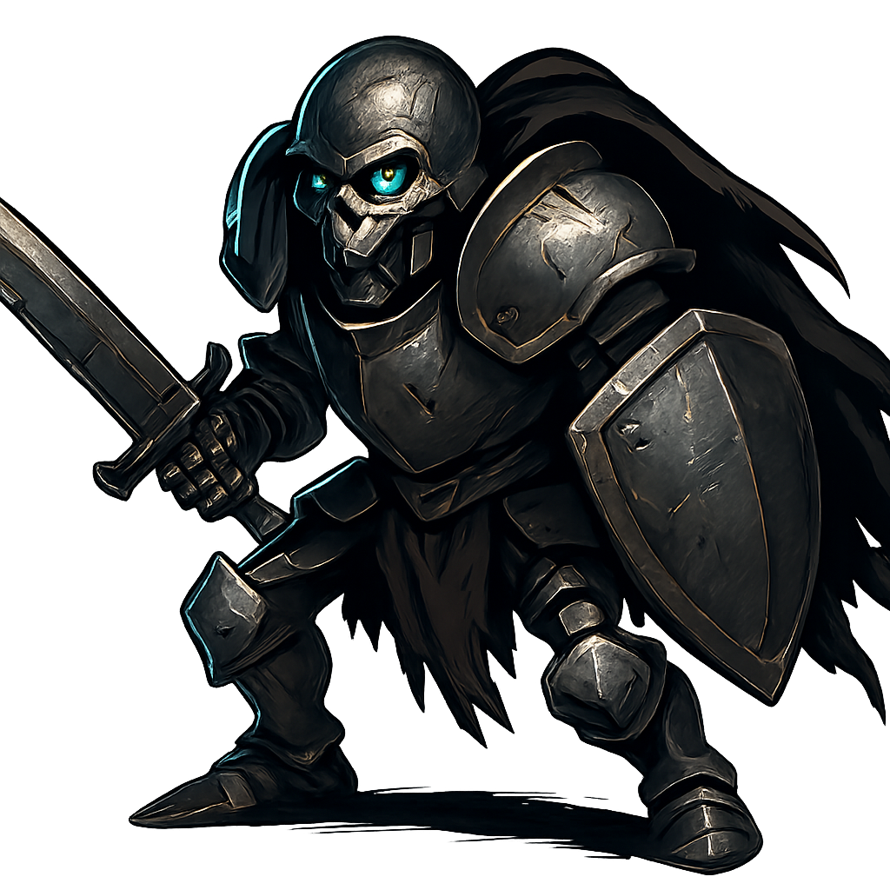
ボーンナイト
HP 36 ／ ATK 15
EXP 30 ／ G 24
出現Lv 6
—
[日本語] ファンタジーRPGのモンスター：使い込まれた黒鉄のプレートアーマーをまとった不死のボーンナイト。剣と盾を構えた攻撃的なガード姿勢で腰を落とし、眼窩の奥で冷たい青白い魂の炎が光っている。ひび割れた象牙色の骨、鋭い反射光が入った金属装甲、刃こぼれした剣の豊かな質感対比。斜め（3/4）アングル、動きのある非対称シルエット。作り込まれた2Dファンタジーゲーム用スプライトアート、劇的なリムライト（輪郭光）、深い陰影、くっきりした暗い外枠線、中央配置の全身像、透過背景に単体切り抜き、文字なし、地面の影なし。
[EN] A fantasy RPG monster: an undead skeletal knight in battered dark-iron plate armor, crouching slightly in an aggressive sword-and-shield guard stance, cold cyan soul-fire glinting deep inside its eye sockets. Rich tactile material contrast between cracked ivory bones, dented metallic armor plates with sharp specular highlights, and a notched broadsword. Three-quarter angle, dynamic asymmetrical silhouette. High-craft 2D fantasy game sprite art, dramatic rim lighting, deep shading, crisp clean dark outline, centered full body, isolated on transparent background, no text, no ground shadow.
新4層Prompt (C: GPT Image 1)
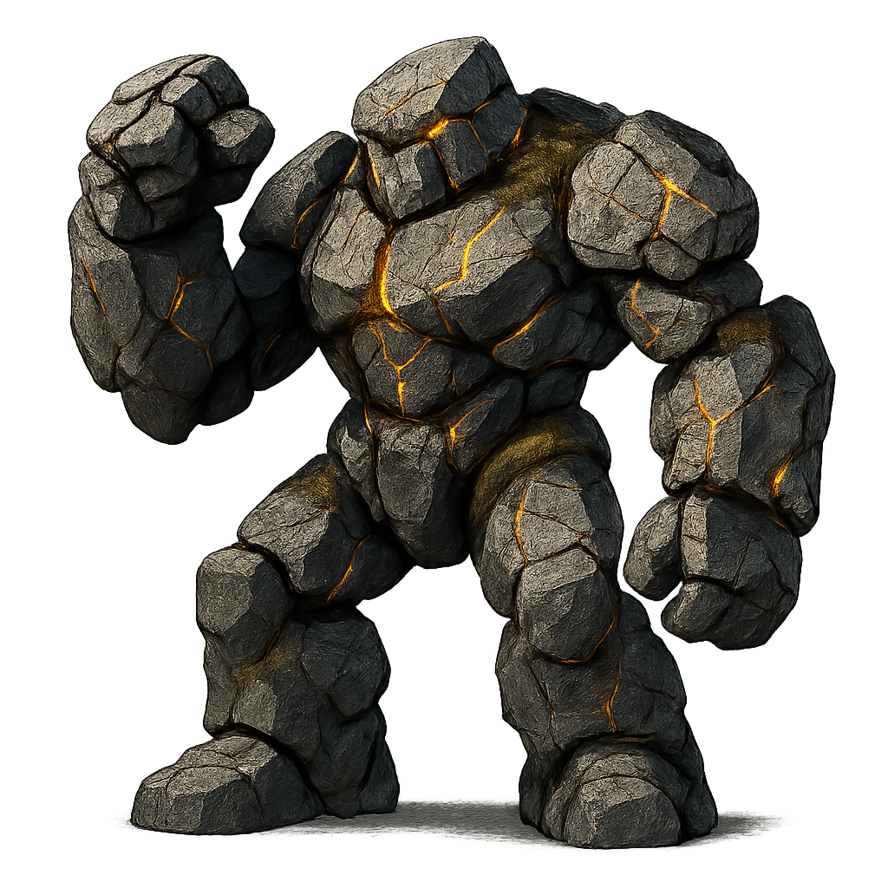
いわのきょじん
HP 50 ／ ATK 14
EXP 35 ／ G 25
出現Lv 7
—
[日本語] ファンタジーRPGのモンスター：古代のルーンで結合された巨大な灰色花崗岩の岩塊からなるいわのきょじん。岩石の拳を振り上げている。荒く割れた岩肌、乾いた高地の苔、琥珀色に光るルーンの亀裂の豊かな質感対比。斜め（3/4）アングル、動きのある非対称シルエット。作り込まれた2Dファンタジーゲーム用スプライトアート、劇的なリムライト（輪郭光）、深い陰影、くっきりした暗い外枠線、中央配置の全身像、透過背景に単体切り抜き、文字なし、地面の影なし。
[EN] A fantasy RPG monster: a towering rock colossus constructed from massive interlocking grey granite boulders bound by glowing ancient runes, raising one crushing stone fist. Rich tactile material contrast between rough fractured stone slabs, patches of dry highland moss, and glowing amber rune cracks. Three-quarter angle, dynamic asymmetrical silhouette. High-craft 2D fantasy game sprite art, dramatic rim lighting, deep shading, crisp clean dark outline, centered full body, isolated on transparent background, no text, no ground shadow.
新4層Prompt (C: GPT Image 1)
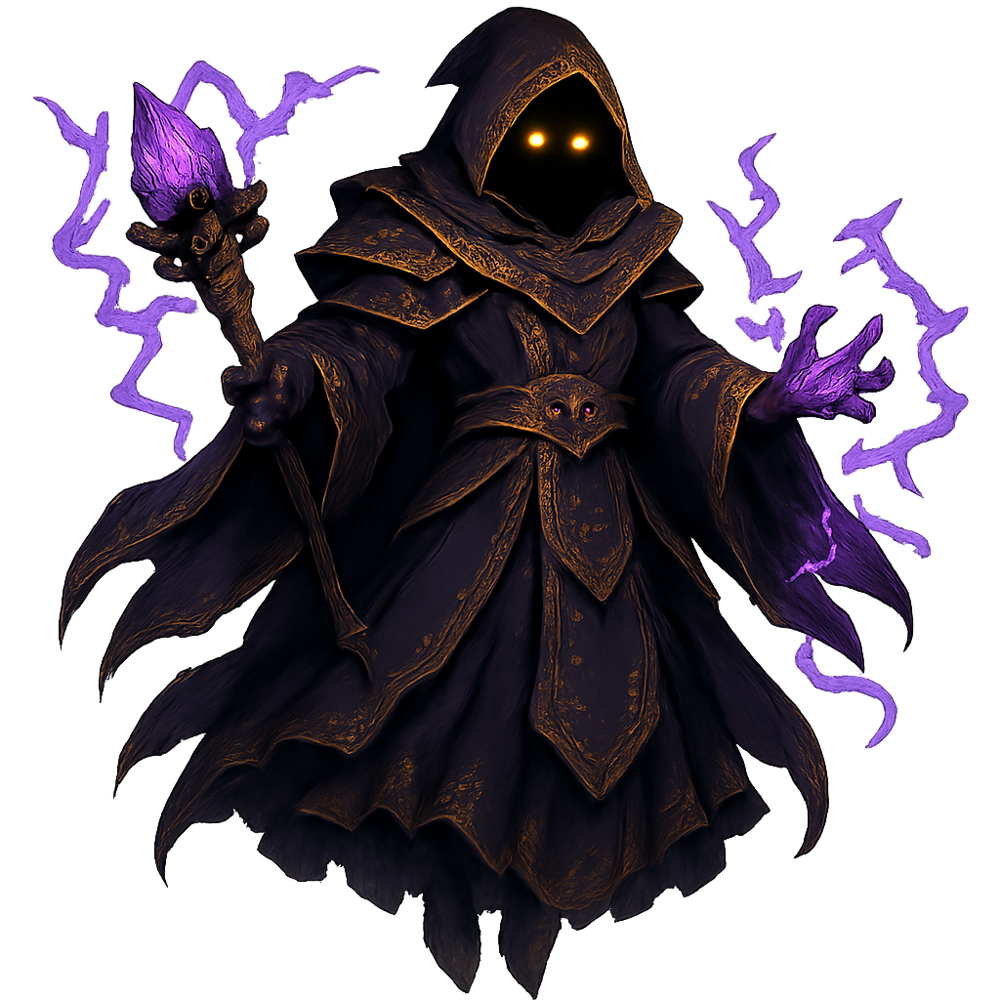
くろまどう
HP 24 ／ ATK 18
EXP 40 ／ G 32
出現Lv 7
—
[日本語] ファンタジーRPGのモンスター：金のルーン刺繍が入った黒曜石色と紫の重厚なローブをまとったくろまどう。深いフードの下で目を光らせ、宝玉の杖から黒い稲妻を放ちながらわずかに浮遊している。刺繍入りベルベット生地、古びた金細工、輝く魔道クリスタルの豊かな質感対比。斜め（3/4）アングル、動きのある非対称シルエット。作り込まれた2Dファンタジーゲーム用スプライトアート、劇的なリムライト（輪郭光）、深い陰影、くっきりした暗い外枠線、中央配置の全身像、透過背景に単体切り抜き、文字なし、地面の影なし。
[EN] A fantasy RPG monster: a sinister high sorcerer in layered obsidian-and-violet robes trimmed with gold runes, levitating slightly while channeling dark lightning from an ornate crystal staff, glowing eyes beneath a deep hood. Rich tactile material contrast between heavy embroidered velvet fabric, aged gold filigree, and radiant arcane crystal. Three-quarter angle, dynamic asymmetrical silhouette. High-craft 2D fantasy game sprite art, dramatic rim lighting, deep shading, crisp clean dark outline, centered full body, isolated on transparent background, no text, no ground shadow.
新4層Prompt (C: GPT Image 1)
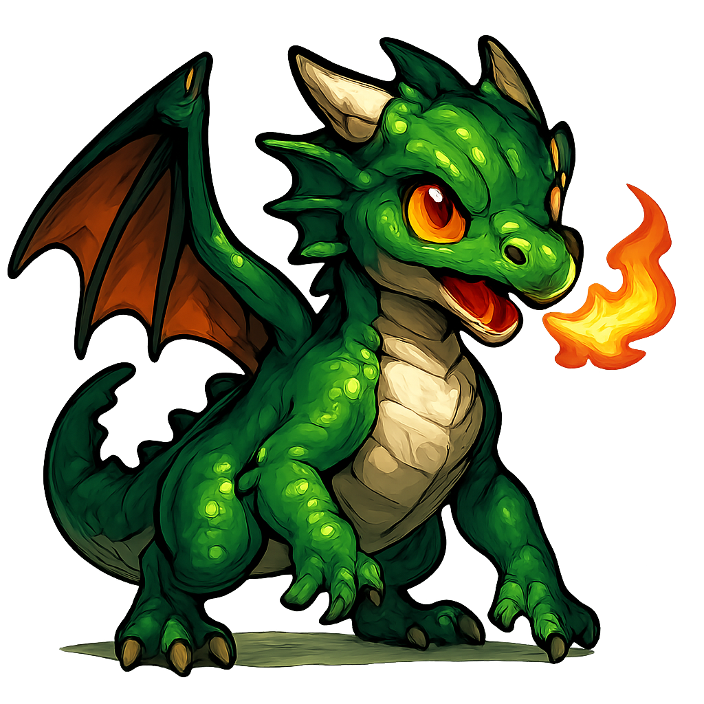
こどものドラゴン
HP 20 ／ ATK 8
EXP 15 ／ G 12
出現Lv 2
—
[日本語] ファンタジーRPGのモンスター：鼻先から小さなオレンジ色の炎を吐き出す、元気いっぱいのエメラルドグリーンのこどものドラゴン。大きな明るい目で誇らしげに小さな翼を広げている。ツヤのある緑の鱗、柔らかいクリーム色の腹板、小さな象牙色の角の豊かな質感対比。斜め（3/4）アングル、動きのある非対称シルエット。作り込まれた2Dファンタジーゲーム用スプライトアート、劇的なリムライト（輪郭光）、深い陰影、くっきりした暗い外枠線、中央配置の全身像、透過背景に単体切り抜き、文字なし、地面の影なし。
[EN] A fantasy RPG monster: a feisty young emerald-green dragon hatchling puffing a small curl of orange flame from its snout, wings half-spread in a proud little combat stance with big bright eyes. Rich tactile material contrast between glossy overlapping green scales, soft cream underbelly plates, and tiny ivory horns. Three-quarter angle, dynamic asymmetrical silhouette. High-craft 2D fantasy game sprite art, dramatic rim lighting, deep shading, crisp clean dark outline, centered full body, isolated on transparent background, no text, no ground shadow.
新4層Prompt (C: GPT Image 1)
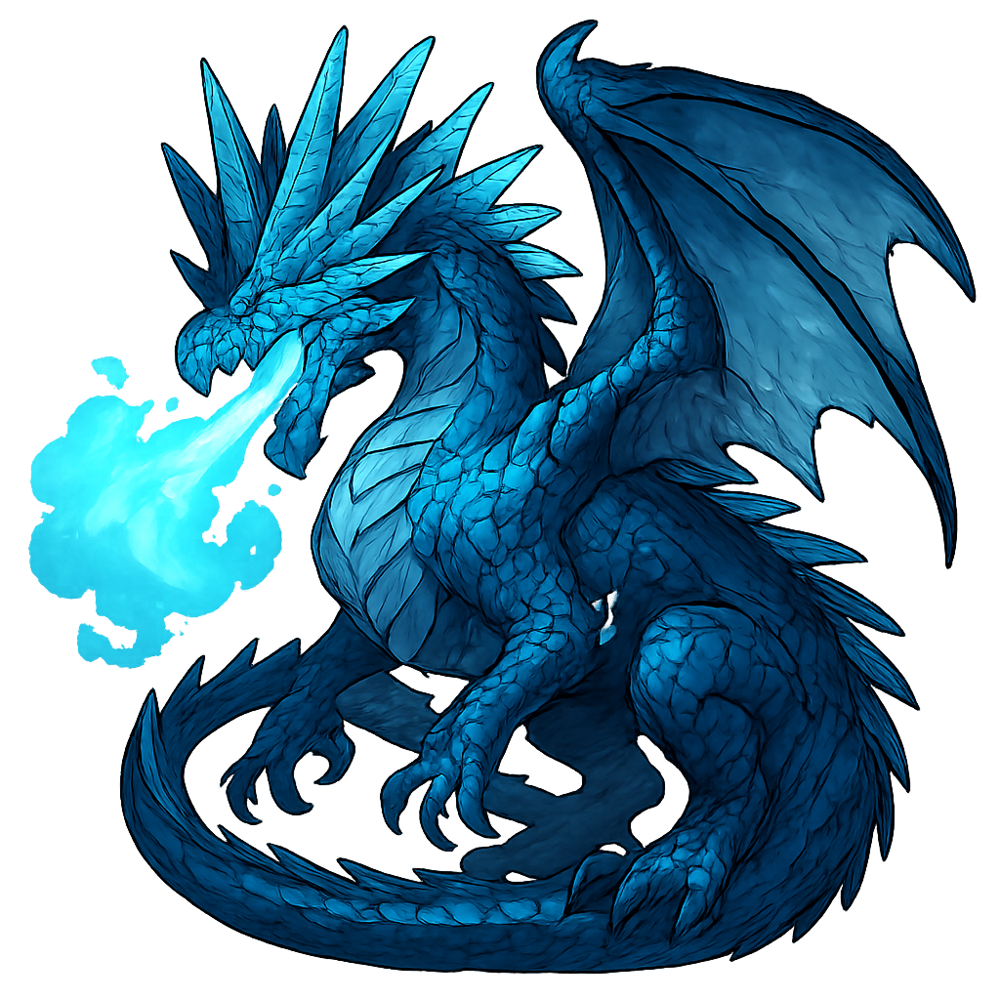
ひょうがドラゴン
HP 55 ／ ATK 18
EXP 55 ／ G 45
出現Lv 8
—
[日本語] ファンタジーRPGのモンスター：氷結晶の角と霜に縁取られた翼を持つ、荘厳かつ獰猛なシアン色のひょうがドラゴン。凍てつくブレスを放つため身を構えている。玉虫色に輝く蒼い竜鱗、半透明で鋭い氷河の突起、光る冷気の蒸気との豊かな質感対比。斜め（3/4）アングル、動きのある非対称シルエット。作り込まれた2Dファンタジーゲーム用スプライトアート、劇的なリムライト（輪郭光）、深い陰影、くっきりした暗い外枠線、中央配置の全身像、透過背景に単体切り抜き、文字なし、地面の影なし。
[EN] A fantasy RPG monster: a majestic yet ferocious cyan glacier dragon with jagged ice-crystal horns and frost-rimmed wings, coiled to unleash a freezing breath attack. Rich tactile material contrast between iridescent sapphire-blue dragon scales, translucent razor-sharp glacier ice ridges, and glowing frost vapor. Three-quarter angle, dynamic asymmetrical silhouette. High-craft 2D fantasy game sprite art, dramatic rim lighting, deep shading, crisp clean dark outline, centered full body, isolated on transparent background, no text, no ground shadow.
新4層Prompt (C: GPT Image 1)
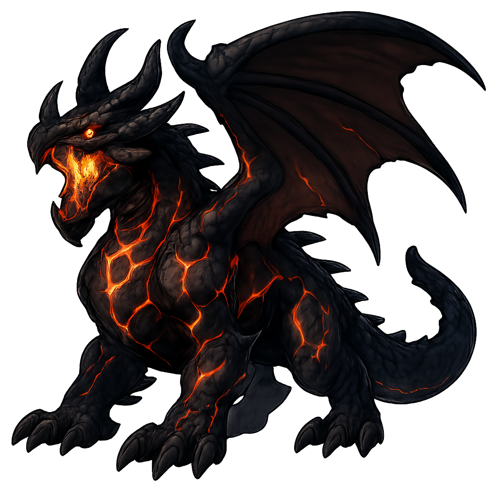
こくえんドラゴン
HP 80 ／ ATK 22
EXP 90 ／ G 70
出現Lv 9
—
[日本語] ファンタジーRPGのモンスター：分厚い黒鱗の隙間から真紅の灼熱光が漏れる、漆黒のこくえんドラゴン。黒い翼を大きく広げて咆哮している。マットな火山岩のような黒鱗、白熱するマグマの脈、鋭く湾曲した黒角の豊かな質感対比。斜め（3/4）アングル、動きのある非対称シルエット。作り込まれた2Dファンタジーゲーム用スプライトアート、劇的なリムライト（輪郭光）、深い陰影、くっきりした暗い外枠線、中央配置の全身像、透過背景に単体切り抜き、文字なし、地面の影なし。
[EN] A fantasy RPG monster: an apex obsidian-black dread dragon with molten crimson cracks glowing between its heavy armor scales, roaring with dark wings spread wide. Rich tactile material contrast between matte volcanic-black dragon scales, incandescent magma veins, and wickedly curved dark horns. Three-quarter angle, dynamic asymmetrical silhouette. High-craft 2D fantasy game sprite art, dramatic rim lighting, deep shading, crisp clean dark outline, centered full body, isolated on transparent background, no text, no ground shadow.
新4層Prompt (C: GPT Image 1)
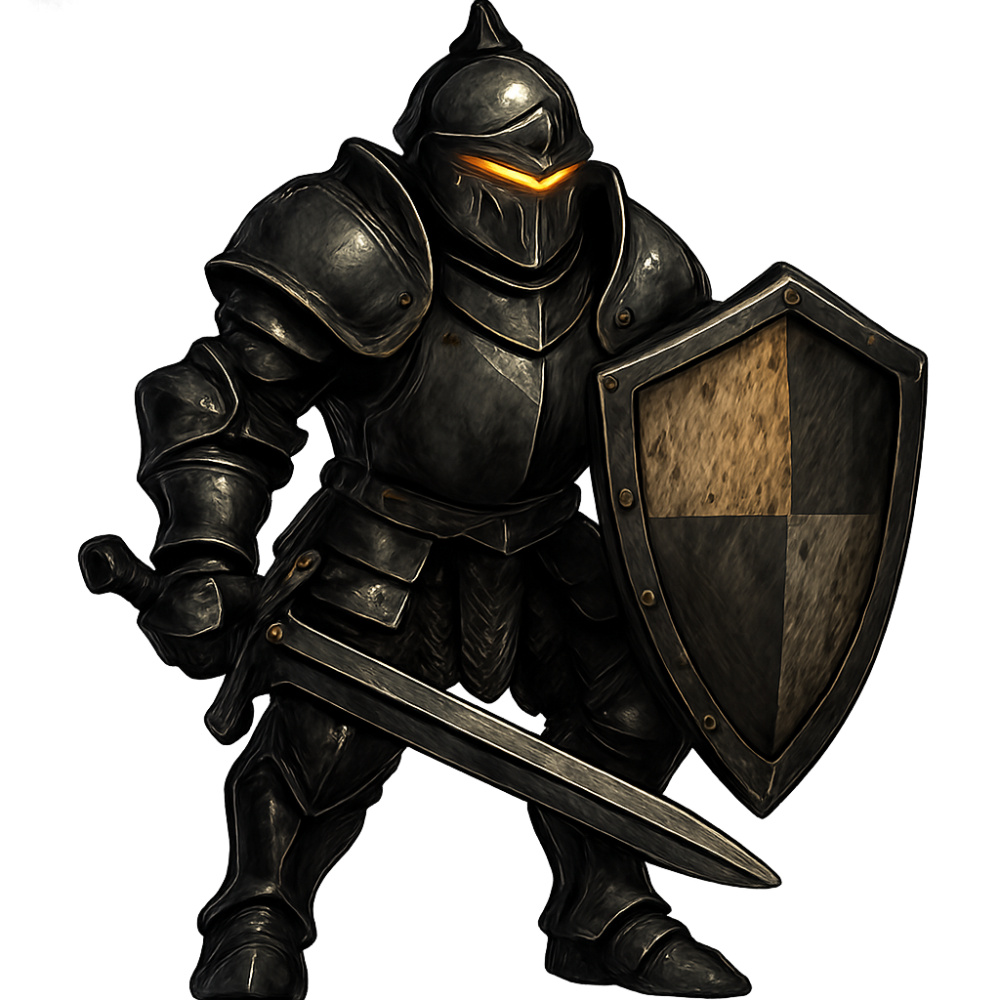
くろがねのきし
HP 42 ／ ATK 17
EXP 38 ／ G 30
出現Lv 7
—
[日本語] ファンタジーRPGのモンスター：全身を鍛え抜かれた黒鉄のプレートアーマーで包んだくろがねのきし。兜の隙間から光を放ち、カイトシールドと幅広の剣を構えて隙のない防御姿勢をとっている。鈍く光る鍛造黒鋼、真鍮のリベット、使い込まれた盾の表面の豊かな質感対比。斜め（3/4）アングル、動きのある非対称シルエット。作り込まれた2Dファンタジーゲーム用スプライトアート、劇的なリムライト（輪郭光）、深い陰影、くっきりした暗い外枠線、中央配置の全身像、透過背景に単体切り抜き、文字なし、地面の影なし。
[EN] A fantasy RPG monster: a stalwart black-iron armored knight monster in full tempered steel plate, holding a kite shield and broadsword in a disciplined guard stance with a glowing visor slit. Rich tactile material contrast between brushed dark forged steel, brass rivets, and weathered heraldic shield surface. Three-quarter angle, dynamic asymmetrical silhouette. High-craft 2D fantasy game sprite art, dramatic rim lighting, deep shading, crisp clean dark outline, centered full body, isolated on transparent background, no text, no ground shadow.
新4層Prompt (C: GPT Image 1)
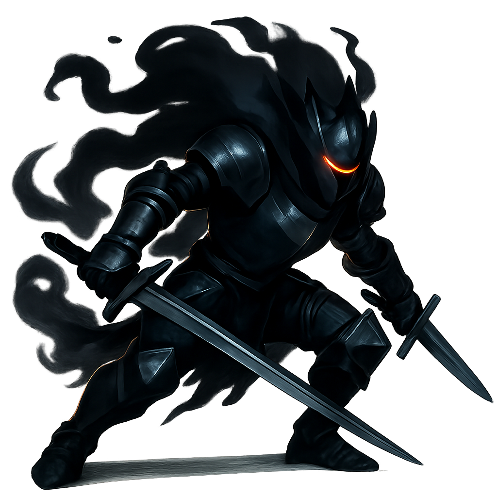
シャドウナイト
HP 46 ／ ATK 18
EXP 44 ／ G 34
出現Lv 8
—
[日本語] ファンタジーRPGのモンスター：深夜のように暗い黒鋼の鎧と影煙のマントをまとったシャドウナイト。兜の隙間から赤い光を放ち、低い二刀流の構えをとっている。ヘアライン仕上げの黒金属、実体化する影の霧、鋭利な刃の豊かな質感対比。斜め（3/4）アングル、動きのある非対称シルエット。作り込まれた2Dファンタジーゲーム用スプライトアート、劇的なリムライト（輪郭光）、深い陰影、くっきりした暗い外枠線、中央配置の全身像、透過背景に単体切り抜き、文字なし、地面の影なし。
[EN] A fantasy RPG monster: a lethal shadow knight clad in sleek midnight-blue blackened steel armor and a billowing shadow-smoke cloak, poised in an agile low dual-sword stance with glowing crimson visor slit. Rich tactile material contrast between brushed dark metal, solidifying shadow mist, and razor-edged blades. Three-quarter angle, dynamic asymmetrical silhouette. High-craft 2D fantasy game sprite art, dramatic rim lighting, deep shading, crisp clean dark outline, centered full body, isolated on transparent background, no text, no ground shadow.
新4層Prompt (C: GPT Image 1)
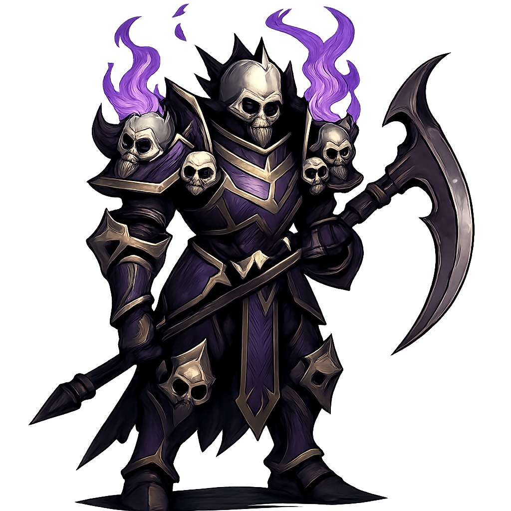
めいかいのきし
HP 60 ／ ATK 21
EXP 70 ／ G 55
出現Lv 9
—
[日本語] ファンタジーRPGのモンスター：紫鋼と白骨装飾が施された重厚な鎧をまとい、肩甲から紫の霊炎を立ち上らせるめいかいのきし。大ぶりのハルバード（斧槍）を構えている。紫塗りの鋼鉄、白骨の彫刻、霊炎の豊かな質感対比。斜め（3/4）アングル、動きのある非対称シルエット。作り込まれた2Dファンタジーゲーム用スプライトアート、劇的なリムライト（輪郭光）、深い陰影、くっきりした暗い外枠線、中央配置の全身像、透過背景に単体切り抜き、文字なし、地面の影なし。
[EN] A fantasy RPG monster: a dread netherworld knight in ornate royal-purple and bone-sculpted heavy plate armor, wielding a wickedly curved executioner halberd with eerie violet flames rising from its pauldrons. Rich tactile material contrast between lacquered purple steel, bleached skull motifs, and spectral fire. Three-quarter angle, dynamic asymmetrical silhouette. High-craft 2D fantasy game sprite art, dramatic rim lighting, deep shading, crisp clean dark outline, centered full body, isolated on transparent background, no text, no ground shadow.
新4層Prompt (C: GPT Image 1)
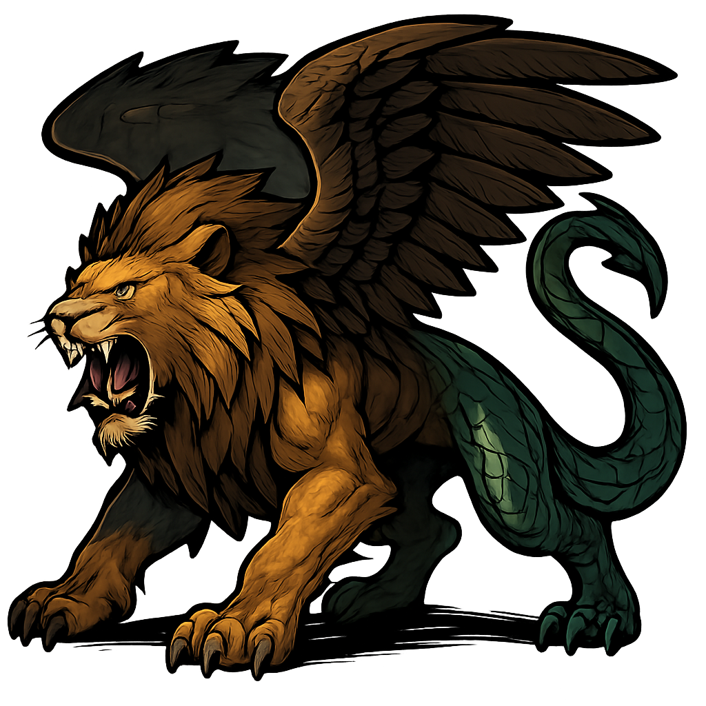
キメラ
HP 38 ／ ATK 16
EXP 34 ／ G 40
出現Lv 6
—
[日本語] ファンタジーRPGのモンスター：黄褐色の獅子の頭と前脚、大きな鷲の羽翼、緑の蛇の尾を持つ合成獣キメラ。飛びかかる構えで咆哮している。ふさふさした黄金茶のたてがみ、重なる鳥の羽毛、艶のある爬虫類鱗の豊かな質感対比。斜め（3/4）アングル、動きのある非対称シルエット。作り込まれた2Dファンタジーゲーム用スプライトアート、劇的なリムライト（輪郭光）、深い陰影、くっきりした暗い外枠線、中央配置の全身像、透過背景に単体切り抜き、文字なし、地面の影なし。
[EN] A fantasy RPG monster: a mythical chimera beast with a tawny lion head and forelegs, broad feathered eagle wings, and a coiling green serpent tail, roaring in a poised pounce stance. Rich tactile material contrast between shaggy golden-brown mane, layered bird feathers, and slick reptile scales. Three-quarter angle, dynamic asymmetrical silhouette. High-craft 2D fantasy game sprite art, dramatic rim lighting, deep shading, crisp clean dark outline, centered full body, isolated on transparent background, no text, no ground shadow.
新4層Prompt (C: GPT Image 1)
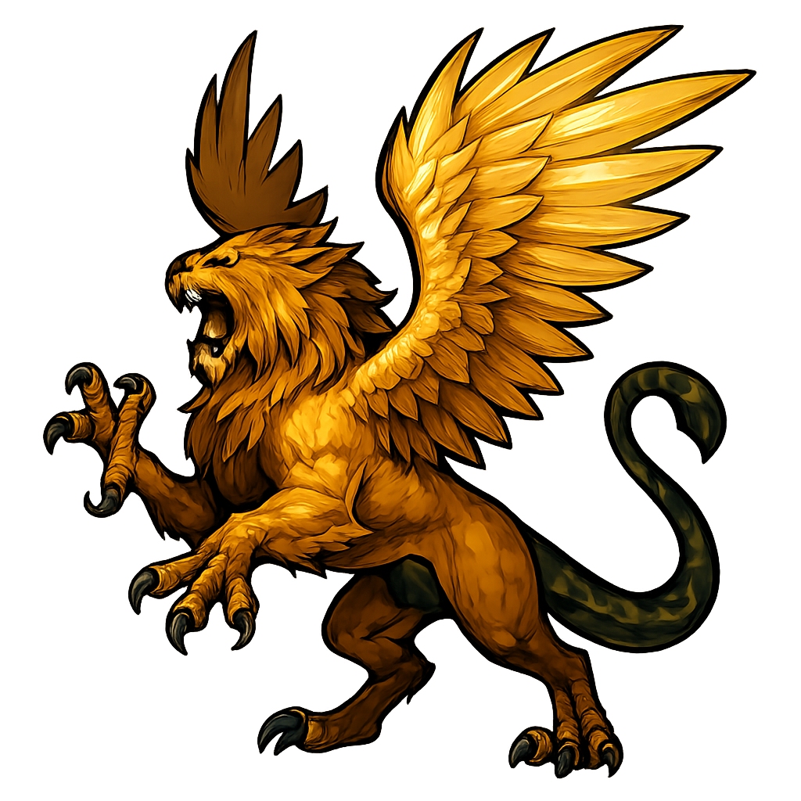
きんばねキメラ
HP 48 ／ ATK 18
EXP 50 ／ G 50
出現Lv 8
—
[日本語] ファンタジーRPGのモンスター：太陽のように輝く黄金の翼、獰猛な獅子の体、鷲の鉤爪、蛇の尾を持つきんばねキメラ。金属光沢のある金色の羽毛、たくましい獅子の毛並み、尾の艶やかな爬虫類鱗の豊かな質感対比。斜め（3/4）アングル、動きのある非対称シルエット。作り込まれた2Dファンタジーゲーム用スプライトアート、劇的なリムライト（輪郭光）、深い陰影、くっきりした暗い外枠線、中央配置の全身像、透過背景に単体切り抜き、文字なし、地面の影なし。
[EN] A fantasy RPG monster: a radiant golden-winged chimera beast with a fierce lion body, eagle talons, and a serpent tail, rearing up with gleaming sun-gold feathers flared. Rich tactile material contrast between metallic golden plumage, tawny muscular lion fur, and glossy reptilian scales on the tail. Three-quarter angle, dynamic asymmetrical silhouette. High-craft 2D fantasy game sprite art, dramatic rim lighting, deep shading, crisp clean dark outline, centered full body, isolated on transparent background, no text, no ground shadow.
新4層Prompt (C: GPT Image 1)
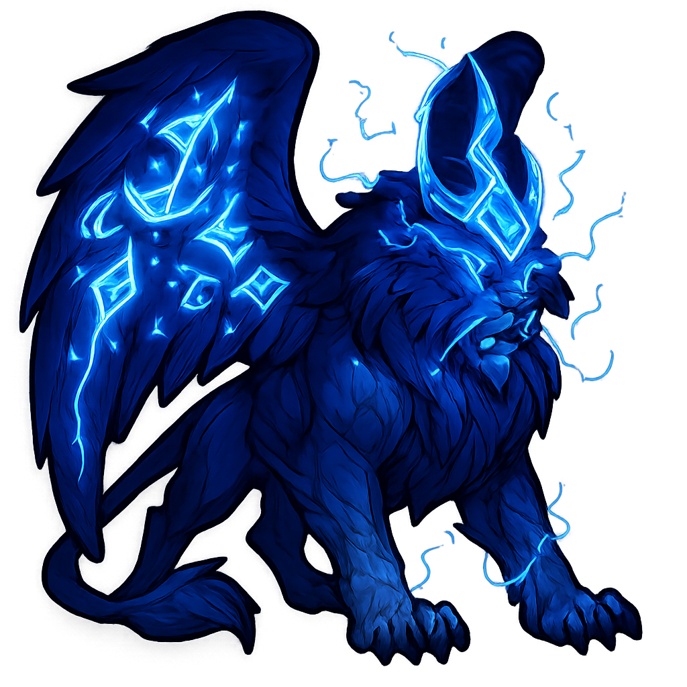
まどうキメラ
HP 42 ／ ATK 20
EXP 55 ／ G 48
出現Lv 8
—
[日本語] ファンタジーRPGのモンスター：羽に星々のルーン紋様が輝き、頭部に魔道の角冠を持つ蒼いまどうキメラ。青い魔力火花を散らしている。深い藍色の羽、銀青色の毛並み、発光する魔法印の豊かな質感対比。斜め（3/4）アングル、動きのある非対称シルエット。作り込まれた2Dファンタジーゲーム用スプライトアート、劇的なリムライト（輪郭光）、深い陰影、くっきりした暗い外枠線、中央配置の全身像、透過背景に単体切り抜き、文字なし、地面の影なし。
[EN] A fantasy RPG monster: an arcane sapphire-blue chimera monster with glowing celestial runes across its feathered wings and a horned mystic crest on its lion head, crackling with blue spell energy. Rich tactile material contrast between deep indigo feathers, silver-blue fur, and luminous magic sigils. Three-quarter angle, dynamic asymmetrical silhouette. High-craft 2D fantasy game sprite art, dramatic rim lighting, deep shading, crisp clean dark outline, centered full body, isolated on transparent background, no text, no ground shadow.
新4層Prompt (C: GPT Image 1)
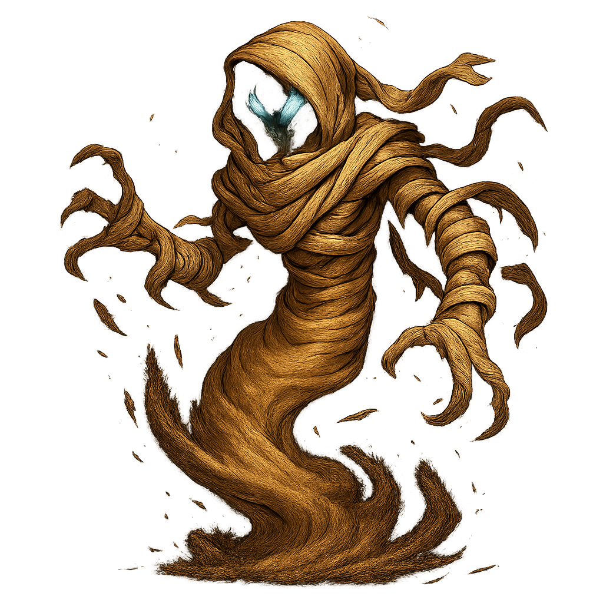
すなけむりゴースト
HP 24 ／ ATK 12
EXP 20 ／ G 16
出現Lv 4
—
[日本語] ファンタジーRPGのモンスター：渦巻く黄金色の砂塵と古代の麻包帯から形作られたすなけむりゴースト。砂の渦からターコイズ色に光る目で現れる。粗い砂粒、風化した包帯布、霊的な発光の豊かな質感対比。斜め（3/4）アングル、動きのある非対称シルエット。作り込まれた2Dファンタジーゲーム用スプライトアート、劇的なリムライト（輪郭光）、深い陰影、くっきりした暗い外枠線、中央配置の全身像、透過背景に単体切り抜き、文字なし、地面の影なし。
[EN] A fantasy RPG monster: a desert sandstorm wraith formed from swirling golden-tan dunes and fluttering ancient linen bandages, emerging from a vortex of grit with glowing turquoise eyes. Rich tactile material contrast between coarse swirling sand grains, weathered burial wraps, and spectral glow. Three-quarter angle, dynamic asymmetrical silhouette. High-craft 2D fantasy game sprite art, dramatic rim lighting, deep shading, crisp clean dark outline, centered full body, isolated on transparent background, no text, no ground shadow.
新4層Prompt (C: GPT Image 1)
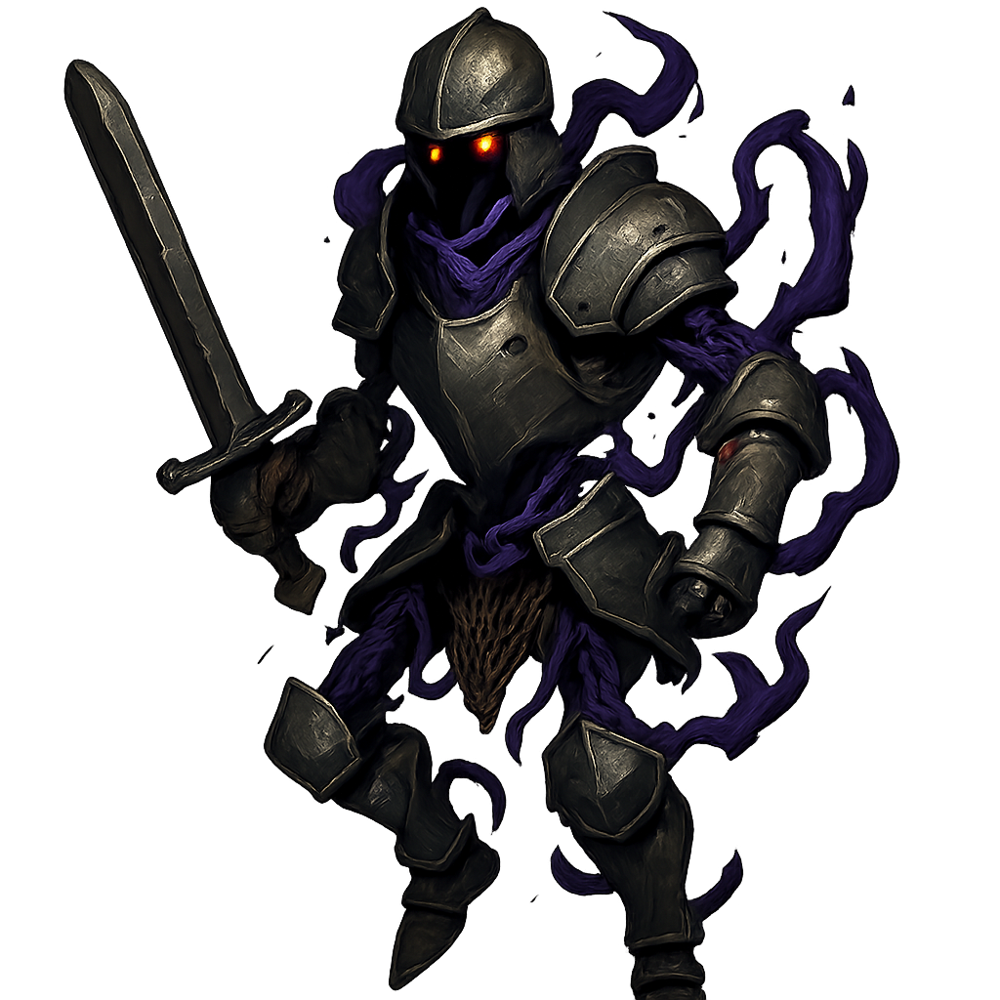
なきがらのよろい
HP 40 ／ ATK 16
EXP 34 ／ G 26
出現Lv 6
—
[日本語] ファンタジーRPGのモンスター：黒紫の呪いの瘴気で繋がれ、空っぽの兜の奥に赤い2つの光点が宿るなきがらのよろい。傷ついた鍛造鉄、錆びた鎖帷子、幽玄な呪詛エネルギーの豊かな質感対比。斜め（3/4）アングル、動きのある非対称シルエット。作り込まれた2Dファンタジーゲーム用スプライトアート、劇的なリムライト（輪郭光）、深い陰影、くっきりした暗い外枠線、中央配置の全身像、透過背景に単体切り抜き、文字なし、地面の影なし。
[EN] A fantasy RPG monster: a haunted, hollow suit of antique gunmetal-grey plate armor levitating in a menacing guard pose, held together by dark purple curse wisps with two eerie red pinpoint eyes inside the empty helm. Rich tactile material contrast between scratched forged iron, rusted chainmail, and ghostly curse energy. Three-quarter angle, dynamic asymmetrical silhouette. High-craft 2D fantasy game sprite art, dramatic rim lighting, deep shading, crisp clean dark outline, centered full body, isolated on transparent background, no text, no ground shadow.
新4層Prompt (C: GPT Image 1)
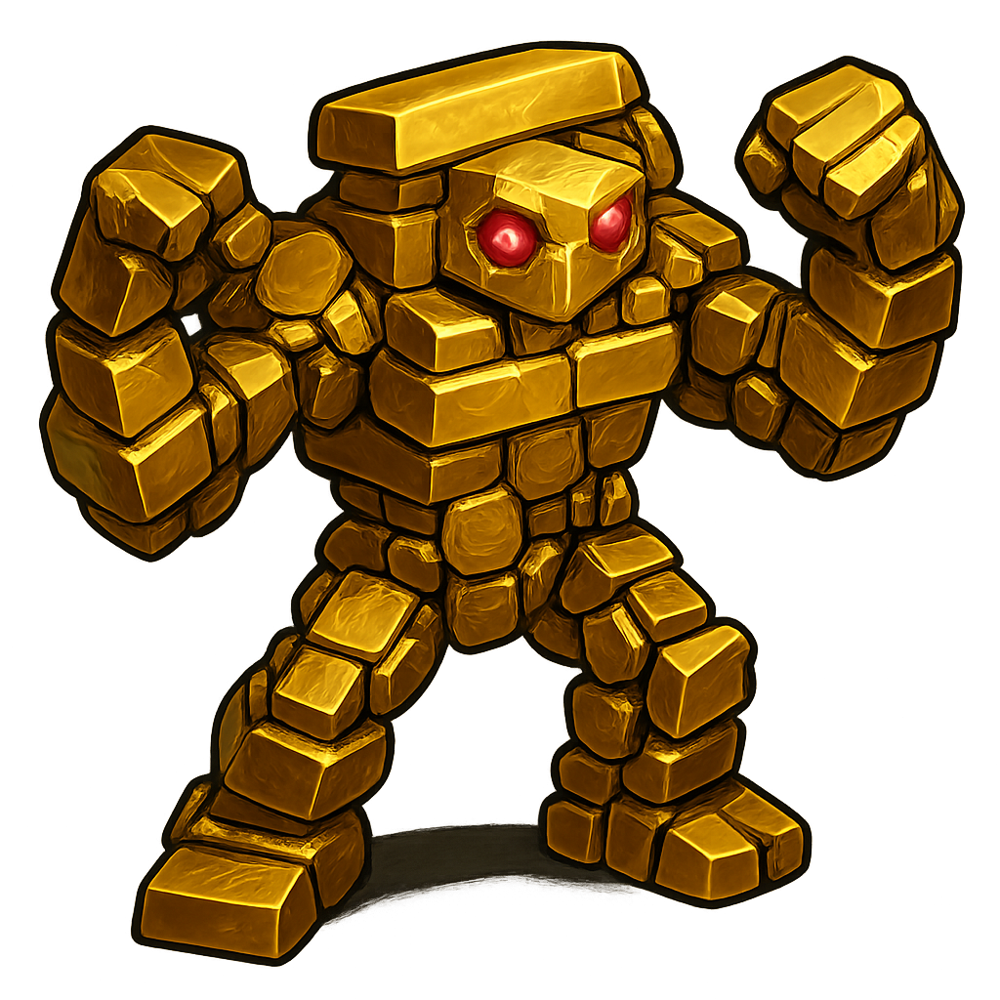
きんかいゴーレム
HP 30 ／ ATK 10
EXP 8 ／ G 300
出現Lv 5
—
硬い（攻撃ほぼ1）
[日本語] ファンタジーRPGのモンスター：積み上げられた純金の延べ棒と古代の金貨で造られたまばゆいきんかいゴーレム。ルビーの赤い目を輝かせ、重い黄金の腕を構えている。打ち出された24金の塊、鋭い金属反射、カットされた紅玉の豊かな質感対比。斜め（3/4）アングル、動きのある非対称シルエット。作り込まれた2Dファンタジーゲーム用スプライトアート、劇的なリムライト（輪郭光）、深い陰影、くっきりした暗い外枠線、中央配置の全身像、透過背景に単体切り抜き、文字なし、地面の影なし。
[EN] A fantasy RPG monster: a dazzling treasure golem built from stacked solid-gold bullion bars and ancient gold coins, flexing its heavy golden arms with ruby-red gemstone eyes. Rich tactile material contrast between hammered gleaming 24-karat gold blocks, sharp metallic reflections, and faceted crimson gems. Three-quarter angle, dynamic asymmetrical silhouette. High-craft 2D fantasy game sprite art, dramatic rim lighting, deep shading, crisp clean dark outline, centered full body, isolated on transparent background, no text, no ground shadow.
新4層Prompt (C: GPT Image 1)
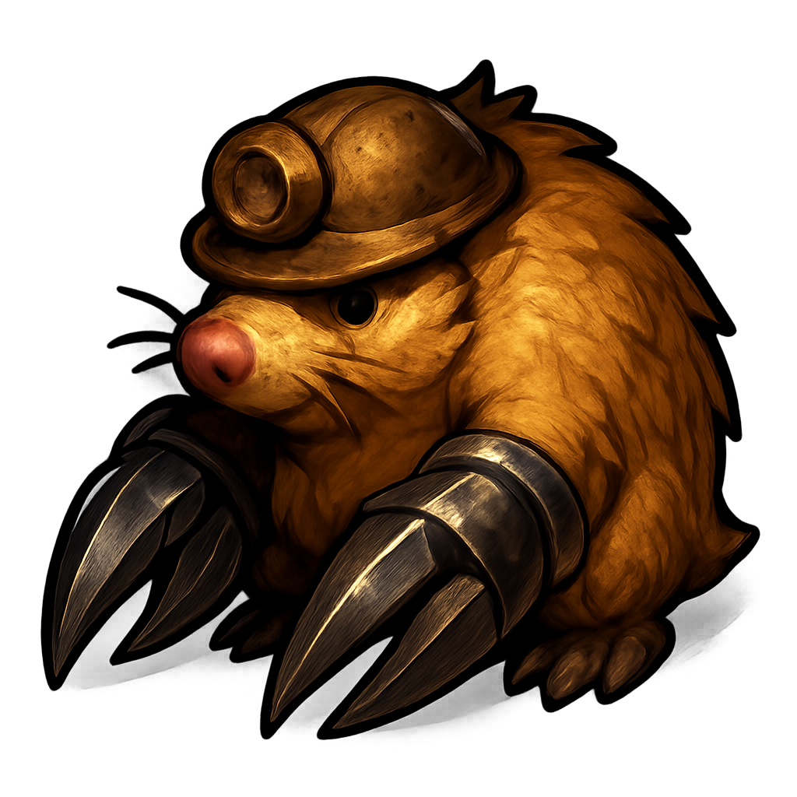
きんのモグラ
HP 8 ／ ATK 4
EXP 80 ／ G 40
出現Lv 5
C3(Lv3)
臆病（逃走しやすい）／硬い（攻撃ほぼ1）
[日本語] ファンタジーRPGのモンスター：小さな坑夫ヘルメットをかぶり、大きな金属製の掘削爪を構えた希少なきんのモグラ。ヒゲを震わせながら今にも地面へ潜って逃げそうな姿勢。輝く黄金色の柔らかな毛並み、磨かれた鋼の爪、ビロードのようなピンクの鼻の豊かな質感対比。斜め（3/4）アングル、動きのある非対称シルエット。作り込まれた2Dファンタジーゲーム用スプライトアート、劇的なリムライト（輪郭光）、深い陰影、くっきりした暗い外枠線、中央配置の全身像、透過背景に単体切り抜き、文字なし、地面の影なし。
[EN] A fantasy RPG monster: a rare, round golden-furred treasure mole monster wearing a tiny miner helmet, hunkered down with oversized metallic digging claws and twitching whiskers, ready to burrow away. Rich tactile material contrast between shimmering golden plush fur, polished steel claws, and a velvety pink nose. Three-quarter angle, dynamic asymmetrical silhouette. High-craft 2D fantasy game sprite art, dramatic rim lighting, deep shading, crisp clean dark outline, centered full body, isolated on transparent background, no text, no ground shadow.
新4層Prompt (C: GPT Image 1)
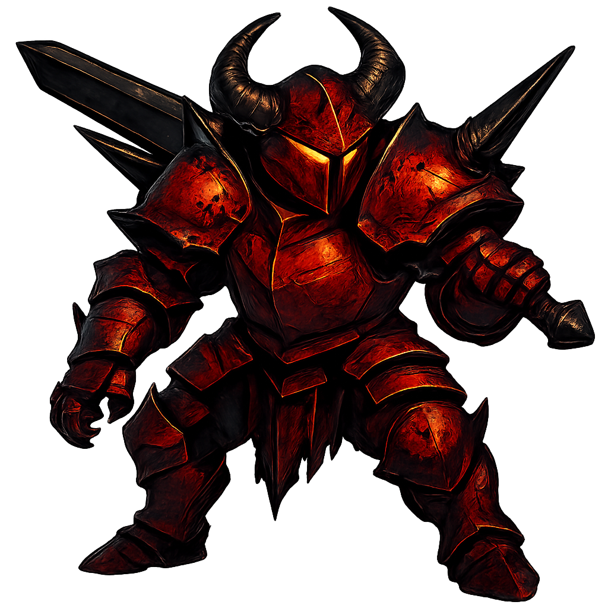
ちぞめのきし
HP 55 ／ ATK 20
EXP 65 ／ G 60
出現Lv 9
—
[日本語] ファンタジーRPGのモンスター：羊角の兜とトゲ付きの深紅のプレートアーマーをまとったちぞめのきし。ギザギザの黒鉄の大剣を獰猛に構えている。血のように赤い塗装の装甲板、焦げた黒鉄、兜の奥で光る橙色の目の豊かな質感対比。斜め（3/4）アングル、動きのある非対称シルエット。作り込まれた2Dファンタジーゲーム用スプライトアート、劇的なリムライト（輪郭光）、深い陰影、くっきりした暗い外枠線、中央配置の全身像、透過背景に単体切り抜き、文字なし、地面の影なし。
[EN] A fantasy RPG monster: a blood-crimson demonic heavy knight in spiked scarlet plate armor with curved ram horns on its helm, swinging a jagged black-iron greatsword in a brutal stance. Rich tactile material contrast between lacquered blood-red armor plates, scorched dark iron, and glowing orange visor eyes. Three-quarter angle, dynamic asymmetrical silhouette. High-craft 2D fantasy game sprite art, dramatic rim lighting, deep shading, crisp clean dark outline, centered full body, isolated on transparent background, no text, no ground shadow.
新4層Prompt (C: GPT Image 1)
門番ゴーレム
HP 45 ／ ATK 12
EXP 60 ／ G 80
出現Lv —
北の橋（固定戦）・A3(Lv5)・C3(Lv3)・下層坑道
北の橋の関所（固定戦）
[日本語] ファンタジーRPGのモンスター：風化した赤土レンガと古代石で築かれた巨大なゴーレム。目を光らせ、巨大な両拳を構えて不動の姿勢をとっている。ひび割れた焼成粘土ブロック、目地のモルタル、重厚な石板の豊かな質感対比。斜め（3/4）アングル、動きのある非対称シルエット。作り込まれた2Dファンタジーゲーム用スプライトアート、劇的なリムライト（輪郭光）、深い陰影、くっきりした暗い外枠線、中央配置の全身像、透過背景に単体切り抜き、文字なし、地面の影なし。
[EN] A fantasy RPG monster: a massive earthen brick-and-clay golem guardian built from weathered terracotta blocks and ancient stone, bracing its huge fists in an immovable stance with glowing eyes. Rich tactile material contrast between cracked kilned clay bricks, Mortar seams, and sturdy stone plates. Three-quarter angle, dynamic asymmetrical silhouette. High-craft 2D fantasy game sprite art, dramatic rim lighting, deep shading, crisp clean dark outline, centered full body, isolated on transparent background, no text, no ground shadow.
新4層Prompt (C: GPT Image 1)
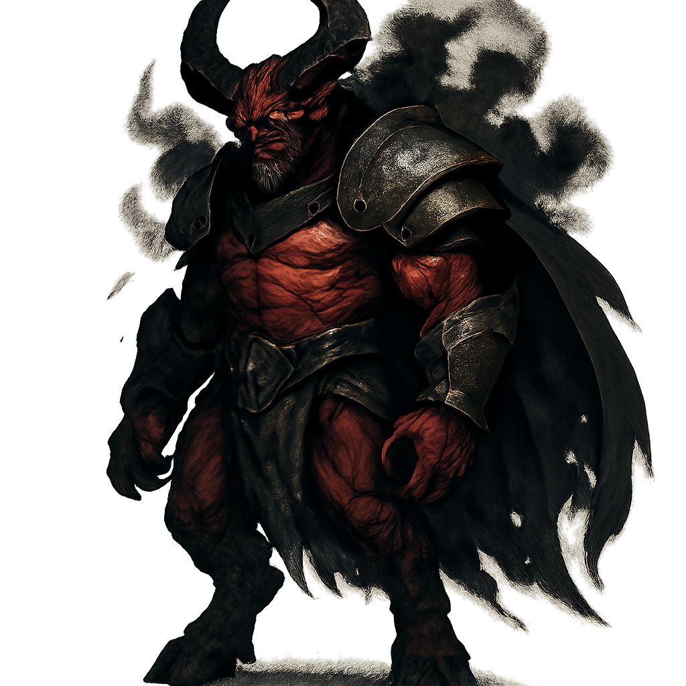
坑底のぬし
HP 70 ／ ATK 16
EXP 60 ／ G 100
出現Lv —
下層ボス床
下層ボス床（逃走不可）
[日本語] ファンタジーRPGのモンスター：湾曲した黒曜石の角、筋骨隆々の真紅の肌、黒鉄の肩鎧とボロボロのマントをまとい、黒い瘴気を放つ坑底のぬし（深層の魔族ボス）。荒い魔族の皮膚、ゴツゴツした火山角、鍛造された黒鎧の豊かな質感対比。斜め（3/4）アングル、動きのある非対称シルエット。作り込まれた2Dファンタジーゲーム用スプライトアート、劇的なリムライト（輪郭光）、深い陰影、くっきりした暗い外枠線、中央配置の全身像、透過背景に単体切り抜き、文字なし、地面の影なし。
[EN] A fantasy RPG monster: an imposing subterranean arch-demon lord of the deep mine, with curved obsidian horns, muscular crimson skin, dark iron pauldrons, and a tattered cape, wreathed in dark miasma. Rich tactile material contrast between rough demonic hide, jagged volcanic horn, and forged dark armor. Three-quarter angle, dynamic asymmetrical silhouette. High-craft 2D fantasy game sprite art, dramatic rim lighting, deep shading, crisp clean dark outline, centered full body, isolated on transparent background, no text, no ground shadow.